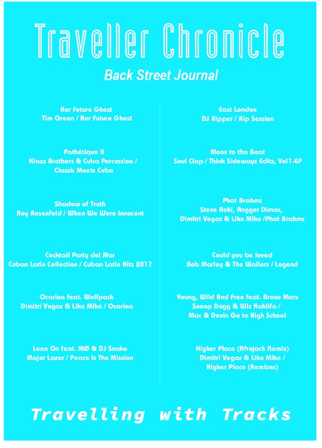
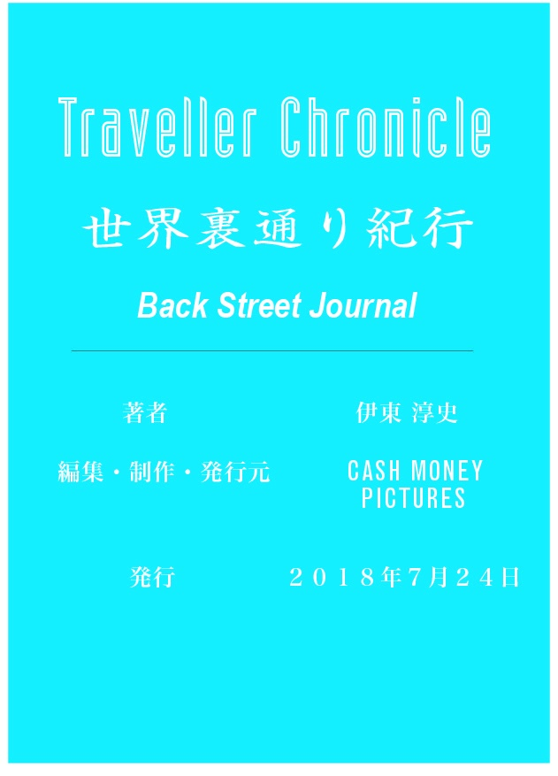

| Traveller Chronicle: 世界裏通り紀行 (Cash Money Pictures) | |
| 伊東 淳史 | |
| Cash Money Pictures (2018) | |
まえがき
今もぼくは旅にでている。それも自身初の世界一周の旅で、まさに今ニューヨークから大西洋を越え、ロンドンにやってきたところだ。先日、３３歳になったばかりで、１９歳から始まった、ぼくの病的といってもよいほどに大好きな旅が、正直ここまで続けれているとは、、、思っていたことである。思いもしなかったのではなく、ずっとそれをし続けることを思い描いてきたのだ。
振り返ると、初めての海外旅行が一人旅でロサンジェルスだった。そこから旅の熱のようなものに火がつき、当時は大学生だったことから、お金を稼いで休みとなれば日本を発って、を繰り返していた。しかし、そのとき訪れたロスに感銘をうけたかといえば、プラスに良く見積もったとしても、未だにそうは感じられない。ただしアメリカの広さと、まだまだ自分の知らない世界が山ほどにあることに衝撃をうけたのは事実で、結局そこからぼくの知的好奇心はますます高まっていく一方だ。
ぼくにとっての未開の地はまだまだあるし、最近気づいたことは、世界へ行けば行くだけ、行きたいところが増えるということに気づいた。なので、旅に終着点はないことを悟らせれ、より心は躍動感でいっぱいになり、今日もゴキゲンに旅先をカメラひとつだけもって、ひたすら歩き回っている。
こんな自分の生き方がぼくは大好きだ。そして今まで以上にもっともっと世界を見て歩いて感動したい。しかし、世間一般では不安定な収入と地につかない生活に否定的な意見もまれに聞くことがあるのは事実。しかし実際、自然災害が世界でも有数の国で何千万、もしくは数億円する家をもち、決して幸せそうでない人たちと毎朝電車にのり、年に１、２回ほどほんの１週間だけ休みをとれる会社に勤めるも、いつなんどき会社が破綻するかわからない経済状況にある日本に住むことが果たして、安全であり、安定的な生活といえるのだろうか？
世界をふらふら歩き回っていると、様々な豊かさの形があることに気づく。本当に多種多様で、ここで説明することは不可能だが、唯一いえる確かなことは、豊かに生きている人たちは自分に正直だった。しかし彼らも様々な困難を乗り越え、自問自答した挙句、本当に自分がしたいことに気づいていったにちがいない。そして、まさに今それを実践して、幸せの最中にあるのだろう。
ぼくたち日本人は、海に囲まれた島国に生き、日本語という日本人以外は話さない言語で、日々のコミュニケーションをとっている。友達や家族、仕事場、そして情報をとることでさえ、基本的に全て日本語で申し分なく生活をおくることができる。しかし現在、世界には約７０億という人がいて、日本の人口が１億ちょっと。つまり単純に数えても、日本のおもしろさの７０倍のサムシングが世界にはあるということだ。ぼくはこれをできる限り、満喫したい。そして、その愉しさをより多くの人に伝えたいというのが本音である。旅をして未知なるモノに出会い、ワクワクしたり、ビックリしたり、時にはヒヤッとしたりすること。それが本なり、写真なり、映像を通じて、多くの人に伝えれらたら、世界はもっともっと面白いことになるんじゃないかと、日々、企んでいる次第である。
この本では、感受性豊かな20代の頃に旅をした国々の一部を選りすぐって書いたものだ。訪れている回数ではアメリカが一番多いのだが、あまりに内容が多すぎてしまうので、ここではアメリカ以外を描くことにした。アメリカ編は次作にて乞うご期待。
それでは、ぼくの世界をどうぞ楽しんでいってくだい。
２０１８年４月２０日 ロンドンにて
伊東 淳史
目次
６月２１日
６月２２日
６月２８日
６月２９日
６月３０日
７月１日
７月３日
◉ 旅のススメ
パブロ・エスコバルを知っているか？
２０世紀最大の麻薬王として世に君臨し、彼をリーダーとしたメデジン・カルテルが、今日のグローバル麻薬ネットワークを構築したといっても過言ではない。死してもなお、映画化されるなど、悪評高き伝説になったこの男の生誕の地が、ここメデジンである。とはいえ、この地を訪れてみると、殺伐とした雰囲気どころか、１年を通して常春の気候であることから、とても快適に過ごしやすい街だ。
あまり知られてはいないが、花の街として有名であることには驚いた。また近隣にはマニサレスという良質のコーヒー豆の産地もある。けれども特筆すべきはこの街が美女の産地ということ。コロンビアに多くのエキゾチックなラテン美女がいることは、日本人の中でも噂として有名だけれど、厳密にいえば、このメデジンこそがその集約地といえよう。
さて世界最大の褶曲山脈とされるアンデスの標高約１５００メートル地帯に私は降り立った。ぼくは空港で自分のバッグをピックアップし外に出るやいなや、瞬時に山々の香りに取り囲まれ、高地ならではの寒気をどことなく感じたのは記憶に新しい。しかし、それは高緯度の寒国で触れるようなものではなく、湿気まじりの、天候の移り変わりが早い山の自然がもたらす人体に身近なようで近寄りがたい寒さであるのだ。首都のボゴタで「メデジンは常春の街」と耳にしてやってきたが、実際は違うもんだなと思いながら、ぼくは人の良さそうなタクシーの運ちゃんを早々に見つけ、その車に乗り込むことにした。
ボゴタから来た旨を告げ、思ったより寒いねと尋ねると、「いや、なに雨季に入ったもので明け方まで雨が降っていたからですよ。おや、旦那、スペイン語話せるんですかい？日本人はやっぱり賢いんだな。いや、しかしボゴタはつまらんかったでしょう？年がら年中雨ばっかり降ってて気候が悪いんだから。ここメデジンは最高ですよ。ほいでメデジンの人のことをパイサって呼ぶんですがね、パイサは人情味があって熱くて、本当に良い奴らばっかりでね。それに比べるとロロは、ふんっ、鼻につく野郎が多くて困りますよ。」ロロとは何かと尋ねると、ボゴタの人の呼称らしい。
このやり取りを出した以上、ここで私はボゴタ人（通称ロロ）の名誉保全のために一つ補足しておく必要がある。私はボゴタでも実際多くの人々から素晴らしいホスピタリティと親切、思いやりを頂いた。街頭の人、宿の従業員、コーヒー屋のアルバイトの女子、中華料理屋の華僑オヤジ（これはコロンビア人ではない？）性別、年齢、職種問わず、多くの人から良くして頂いたのだ。おそらくメデジン人とボゴタ人がお互い対立意識を燃やしているだけであって、それはパリ人とマルセイユ人のような対立意識に似ていて、一旅行者には何の害もなく、むしろその対立が愉快にすら見えるものである。結局のところ、はっきりしていることはボゴタにしろメデジンにしろ、多くのコロンビア人は一ガイジンに対してとても寛容で親切であるということだ。中南米を旅して、それを一番強く感じられたのは絶対的にコロンビアである。
さて、タクシーの運ちゃんは遮ることなく永遠に話を続ける。だが街へ行くには一時間弱も山を下らなければいけなく、三半規管の弱い軟弱紳士のぼくは心半ば限界に近づいており、熱心に話す運ちゃんには悪いが、もはや意識の範疇を越え、朦朧の奴隷と化してしまっていた。当にメデジン流の洗礼を受けながら、山の麓の空港からから、市内に降りてくる頃には、常春の意味が腑に落ちた。本当に暖かくて過ごしやすい。下界は太陽がよく降り注ぎ、昼間は半袖で十分、夜は長袖シャツ一枚でことたりる、そうまるで日本の５月頃の気候だった。
まず、ここで街の仕組みを解説しておこう。メデジンという街は数字の１から５のエリアに明確に分類される。数字が高い地域のエリアは富裕層が住むエリアで、街も清潔で閑静な住宅街といったところだ。そして１はもう完全なスラムで、よそ者が踏み入れてはいけないゾーンということになる。そしてスペイン語圏、とりわけラテンアメリカにおいてセントロは街の中心部を表すのだけれども、それは先進国のブランドストリートのような豪奢極まるものとは正反対で、メデジンのセントロの、とりわけ宜しくない地域には、殺気だった目をした輩、胡散臭そうな（いや、胡散臭い）輩、物乞い、娼婦、ドラッグディーラーと、悪事にかけては達人クラスの人間がこの地域に密集しているといっても過言ではない。しかしだ。そういう所だからこそ、文化や人情味があったりして、それが人間社会の面白いところでもあるのだ。
白状しよう。実はワタクシ、この危険な地域で道に迷ってしまったのである。そもそものきっかけはセントロの人通りの多い道に沿って連なるように並ぶバーの、とある一軒にてセルベッサ（スペイン語でビールの意）を数杯ひっかけていたことに始まる。そのバーで横にいたセニョールと意気投合し、奢り奢られを繰り返す内に酔いは自然と深まるもの。まだ午後２、３時頃の話である。一期一会の出会いに合掌し、そのセニョールに別れをつげ、とりあえずぼくは酒屋へと足を進めた。無意識の産物であった。
そして、そのセントロの酒屋で買い求めた酒の小瓶を片手にフラフラしていると、いつの間にか道に迷っていたのだ。迷ったことに自覚し始めると、酔いが瞬時に気化するのか、多少冷静になり、周囲を見渡せるようになるらしい。するとまず感じたのはマリファナの香りである。もうその地域一体がマリファナの匂いで充満していた。その匂いの元を探るごとく足を進めていくと、その発香源はどうやら公園であるらしい。先に言っておくが、話を誇張するつもりはないし、話を盛っているわけでもない。その公園では、おそらく９９パーセントの人が皆マリファナを嗜んでいる様子であった。皆が皆ハイになっているのだ。そして、その公園の正面には大きな教会が轟然と立ちふさがり、それはそれでたいへん皮肉が利いていてよろしい。また裏には警察官詰所なるものがあり、十人体制で警官がいるにはいるが、取り締まる気配は一切なく、どこかしらお気楽なムードである。
しかしだ。鳥瞰図のようによくよく観察してみると、神と国家権力に挟まれたヒトが逃げ場の見つからないまま、マリファナという緩衝材で世の苦悩を一時的に紛らわしているという光景はとてもエッジがきいており、旅人の目には危険よりは新鮮なようにうつる。国家権力に平伏すか、もしくは神に祈るか、互いの枠から洩れてしまった無意識の集合体が彼らである。だからぼくたちに彼らを批評する権利はこれっぽっちもないのだ。あくまで現代社会の一産物である。彼らを批判することは自分たちを批判しているのと同じなのだ。
さて、世界には異文化にもかかわらず、人が作っているコミュニティである以上、共通事項や現象というものが必ず存在する。例えば肉屋、魚屋が密集する地域というのは大体において治安がよろしくない。ここメデジンのセントロの、とりわけ治安が悪い地域もやはりそうであった。かといって、そういった商店で働いている人間が悪人面しているかというと、そうでもないから不思議なものである。
とある一軒の魚屋をぼくはメデジン滞在中に贔屓にしていたことから自然と従業員と仲良くなり、この地域について少し教えてもらった。人懐っこいまだ２０代前半の若者である。
「ねぇ、アミーゴ、この辺の治安は悪いのかい？」
「昼はそうでもないよ、でも夜は危ないね。まず歩かないことだね。」
「斜め前の置屋は？」
「ははは、あれは全部オカマだよ。ここを下ってメトロを越えた所にちゃんとした置屋やストリップ小屋があるから行くならそこにしなよ。ちゃんと値切らないと駄目だ。４００００ペソまでだね。それ以上はノーだよ。」
聞いてもないのに親切な若者であった。その後もぼくは彼を気に入り、自炊するさいの魚を使う時はこの若者の店にいつも通い、たくさん談笑し時にはセルベッサをおごってやった。その対価として、ぼくは彼からガイドブックにはのっていない生の、魚ではなく、メデジン情報をたくさん仕入れたわけだ。やはり地物ことは地元民に聞くのが一番だ。ぼくは今も冒険の基本を守り続けている。
ここで少し余談だが、コロンビアにはアグアディエンテという妙な酒がある。コロンビアで最も有名な蒸留酒といっても言い過ぎではないくらい、有名な一品である。一応、さとうきびの蒸留酒ということでラム酒の区分に入るのかもしれないが、ラム酒より幾分荒さがあってラム酒とはまた別物と感じるのはぼくだけではあるまい。実はコロンビアの国際空港の免税店では、これがズラリと並べられている。つまり我が国で云うところの「山崎」のような、国を挙げての御当地の酒となるのだろう。
しかし先日コロンビアから来日した友人にアグアンディエンテについて話すと、「イトウさん、あんな安酒は飲んではいけないネ。ワルヨイ悪酔いネ。品位問われるネ。」との真摯なご指摘を戴き、感心する一方で、国を挙げての酒がその国民に非難されるとは一体？と改めて考えさせられたりもしたものだ。そういう意味で、ぼくたち日本人は世界に誇る五大ウイスキーの内の一つを世に輩出しているわけだから誇らしくもあるけれど、外国からのお客さんに世界に誇る日本の酒といって日本酒ではなく、洋酒（山崎なり、響）を出してしまうワタクシも決して誇れる者ではない。これはぼくだけの問題でなく日本人全体の問題である。われわれの民度である 。
市内循環 爆走バス
コロンビアの名物乗り物といえば、シルクラル・スールだ。スペイン語に覚えのない人は全くもって何のことかわからないだろう。ずばりバスである。それも長距離ではなく、市内循環のためのバスである。庶民の足だ。ただし先に断っておくが、これはメデジンだけでなく、ボゴタでも走っている。おそらくコロンビアの主要都市では市民の足とし活躍しているのだろう。
バスはバスでも我が国のそれとは比較にならないくらい個性的であるのだ。国民性の違いと文明の成熟度を最もわかりやすく説明するなら社会のインフラに限る。それも庶民の足となる交通インフラは最もわかりやすい。
我が国ではデコレーショントラックをデコトラと呼ぶが、さしずめメデジンのバスは、デコバスである。このシルクラルスールに同一のデザインはほとんど無く、不二のパーソナリィティでぼくたち異邦人たちを楽しましてくれる。型はバラバラ、大きさもバラバラ、色もバラバラである。色といっても、デザインなのか落書きなのかよくわからない塗装が施されている。この中で一つだけ共通点を見出すとするなら、どれも自分のが一番目立ってるんだぞッ、と云わんばかりの派手さでメデジン市民に訴えかけていることだ。もちろん、追い抜きは当然の如く日常茶飯事である。その運転手たちは、どうやらクラクションを鳴らさないことには逆に落ち着かないらしい。ラテン気質の彼らの個性でバスは改造されているのか、それとも改造に運転手の介入の余地はなく、改造専門のこれまた熱いラテン気質の技術屋がいるのかは非常に興味深いところなので、この調査は次回の課題としよう。
さてこのバスに乗るとき、まず最初に問われるのは貴君の今日の運である。良いバスと言うより、良い運転手（比較的運転が穏やかな）に運良く当たるかどうかで、その日の気分は左右されるのだ。一日の試練はそこから始まるのだ。
もし猪突猛進タイプの運転手のデコバスに乗ってしまったら、次の停留所で降りて次のバスに乗ることをお勧めしよう。目的地まで乗り続けることは、時化の大海原へ漁に出るようなものである。貴君が三半規管の強い剛健者なら別だが。しかしパイサたちはそれに臆することなく、どこ吹く風でお喋りしているのだから、文明先進国のなんでも便利化してしまう国に生きるぼくたちはやはり高度に発達したテクノロジーのおかげで軟弱になってしまっているのかもしれない。しかし、一旅人のぼくは性懲りも無く翌日またバス停に並ぶのである。
このシルクラルスール、市内循環が仕事の定義であるゆえ、多くのバス停に留まる。３～５分おきのペースで忙しく、急発進と急ブレーキの繰り返しを短い波長と長い波長に分けてもれなく乗客の胃袋を揺さぶってくれるのだ。そのバス停に留まるたびに、物売り、歌手、大道芸人（路上パフォーマンスならぬバス内パフォーマンスである）が乗ってきては一仕事し、次のバス停で降りて、また違う職種の人間が仕事をして・・・というのが頻繁に繰り返されるのだ。このシステムがとても愉快で、退屈な時間と三半規管の反応を忘れさせてくれるのである。もちろんメデジン人、パイサたちは誰もそれをシステムとすら思っていないだろうが、一外国人の第三者からすると立派な文化として十二分に機能している。人の集まる所に文化は生まれると言うが、それを地で行っているのがこのバス内のパフォーマーたちであろう。
物売りの行商たちは、まずバス内に入りバスが動き出すのを見計らって、仕事を始める。彼らはまず乗客全員に売りたい商品を素早く渡し始める。手に取らない人はもれなく膝の上に置かれてしまうのだ。この地点でいらない時ははっきり意思表示しておくべきだな。
そして彼らは声高らかに、まるで勇者のように、お菓子やガムのご高説を垂れはじめるのだ。その間、その商品を乗客たちはじろりと一瞥し、興味のある人はどういうわけか見る角度を変えたりしてジロジロ見たり、かたや興味のない人は早く返したくてそわそわ落ち着かない様子である。そしてその雄叫びが終わるやいなや、彼らは乗客一人ひとりの所へ寄っていって、買ってくれる人からはお金と商品を交換し、買わない人からは商品を回収するのである。労力が多いシステムではあるが、原始的で温かい感じがぼくは好きだった。
この商売の重要なポイントは、ずばり客のニーズを探ること、セールストーク、そして商品の受け渡しを次のバス停までに終わらさなければいけないところにある。一つ一つの動作がとても素早く、職人のような身振り手振りで鮮やかに仕事をこなす者もあれば、やはりどこにでもいるかな、トロくさいやつも当然の如くいるのだ。次のバス停に着き、新たなパフォーマーなり行商人が入ってきても、まだ受け渡しに手間がかかっていると、下車のタイミングを損ねてしまい、次の人の仕事を後ろでこっそり見る羽目になるというわけだ。これは恥ずかしいんじゃないかと思っていると、そこはラテン人、何の気負いもせず、後からやって来た行商人と仲良くお喋りしながら一緒に次の駅で降りていったのだった。
物売りは物売りでいいのだけれど、特筆すべきは、シンガーたちのパフォーマンスである。圧倒的に物売りが多いけれど、ときどきシンガーに出会った時はとても幸せな気分に浸れるのだった。シンガーといっても多岐にわたる。コロンビアならではのサルサの曲を歌うものや、かたやポップスもあるし、ラップなんてのもある。シンガー、それともパフォーマー、どう呼べばよいか判りかねるが、彼らがバスの乗客に、いつも元気と感銘を与えていることは間違いないだろう。終わった直後は旨い下手にかかわらず、拍手喝采でバス内は盛り上がるのだから。とても温かいんだ。日本ではなかなかお目にかかれない代物である。
これに関しては、絶対的に女性が優位で、男性は圧倒的に不利であるように思われた。技量云々ではなく、明らかに女性のパフォーマンスの方が拍手、歓声、そしてチップは多いのだから。当然といえば当然であるが、これこそが女性ならではの華というものだろう。
さて、ぼくはいつもながらの強運を発揮し、いつも開運しているのでシルクラルスールで遭遇する女性のシンガーは皆、美人であった。運というよりこれがメデジンの実力であるのかもしれないが、、、。そのパフォーマンスを知らない当初、一人の美女と付き人おじさんが乗客たちの最後に乗り込んできては、運賃を運転手に渡していなかったから、美人であるが故のタダ乗りであるな、とはじめぼくは関心していたのだ。するとなにやら様子が変で、座る気配はないし、なにやら始める準備を彼女と付き人のカイゼル髭のおじさんが話し合っている様子である。
すると、彼女は乗客の全体を見渡せる位置につき、ニッコリと笑みを浮かべると、彼女の後ろからカイゼルオヤジがバンドネオンを奏で始めた。そのリズムと同調させるように彼女の微笑みと歌声が響き渡る。滑らかにリズムと歌声が重なりあい始め、そのあまりにも美しい囁きにより場は一瞬にして彼女の歌声の領域で満たされてしまったのだ。もはや異物は一切入ることができない。たった数分間の、恐ろしいほどの美しさはまるで妖艶と表現するのが相応しく、ぼくたち乗客一同は数分間、どうやら得体の知れない「魔」にとりつかれていたみたいだった。誰として話すわけでもなく、外の景色を見るわけでもなく、寝ている人はその歌声に現実世界へと呼び戻され、全員が五感を支配されてしまっているのだ。その数分間に限り、私は回りの風景、バスの乗り心地といったもろもろのことを一切覚えていないのである。彼女の歌声や仕草以外は何も覚えていないのだ。それほどまでに彼女の囁きにもたらされる艶麗に魅せられてしまっていたらしい。
歌が終わると、場は一瞬の静寂を得て、拍手だ歓声だ口笛の嵐だ。その乗客の喜びに彼女もご満悦のようで、グラシアス、グラシアス（スペイン語でありがとう）と言いながらチップを貰いにまわる様子は、先ほどの妖艶さとはうって変わって、どこかしら健気で子供らしさが残っていて、そのギャップにぼくはものの見事に心を奪われてしまった。渡してあげれる限りのチップを渡して、彼女は最後にもう一度、歌い始めの微笑みでグラシアスと言って、カイゼル髭と嬉しそうに下車していった。カイゼル髭は仕事上のパートナーなのか、父親なのか、親戚のおじさんなのか、それとも年齢の離れた彼氏なのか？もうどうでもよいではないか。ムイビエン。
初めにも言ったことだが、コロンビアが世界でも有数の美女大国であることを耳にしたことはあるだろう。その中でも美女の産地とされているのがここメデジンである。とはいってもボゴタに美人がいないかというと何のその。ぼくはボゴタでも、メデジンに引けをとらないほど、すれ違う美女を振り返って見たのは事実だ。
ボゴタやメデジンで日本人の、とりわけ男性と会うと、絶対と言ってよいほどコロンビアの美女についての話になるのだが、皆が皆、圧倒的にメデジンの美女率に軍配が上がっていた。日本人男性はどうやらパイサの女性が好みであるらしい。だから敢えてメデジンの美女について書くけれど、ボゴタも決してわるくないということをぼくは先にここで述べておくことにする。ぼくのボゴタの女性のイメージは、十人の中の一人が飛びぬけた美女で残りの九人がボテロ（コロンビアの芸術家の名前だが、彼の作品の多くは太った人々を描くことから太った女性のことをボテロ体型といったりするらしい）であって、美女はいるのだが、確かに美女率高しとは決していえない。しかし、ここメデジンはと言うと、ずばり美女の平均値が高いのだ。それも他の街や国に比べて圧倒的に、である。
我々が日本で日常的によく目にするスーパーのレジで働くパートの女性陣を頭に浮かべてほしい。ずばりパートのおばちゃんたちを想像するだろう。しかし、ここメデジンのスーパーで働く女性の過半数は間違いなく若くて美しい美女たちなのだ。南米らしい混血の堀の深いラテン美女である。コロンビア全土に広がるスーパーマーケットの大手にｅｘ ⅰ ｔ o （エクシト）という名のものがある。訳すと成功という意だが、従業員の美女の多さに感激した後に、私はこの単語の意味を知って、妙に感心したものであった。
単に一例を挙げてみたけれど、こういうことはメデジンで日常茶飯事に起きる。先述のシルクラルスールには、想像を絶する絶世の美女がごく当たり前のように乗客として乗ってくるし、それも結構な確率で遭遇するのだ。たまたま貴君の横にしか席があいておらず、そこにだ！麗しのラテン美女が座ったとするなら、どんな気分になってしまうだろう。おそらく昇華の域に達してしまい、貴君の身体はバスに縦横揺られど、精神は人間世界のもう一つ上の次元に行ってしまっているのではないか。
さて、国が異なり、文化も違うことによって美に対する意識までが違ってくるらしい。でもそういった違いを知ることが実は旅の醍醐味で、自分の意識はもちろんのこと、無意識に潜在意識に大きな働きかけをしてくれているのだ。女性の表面的な部分で言うと、我が国では一般的に女性はスレンダーが良いとされているけれど、コロンビアを含め中南米では、太っている方が良くてセクシーとされているらしい。
しかしだ。太っているといっても、我々が想像する太さとは少し異なる。というのも上から下まで太いのではなくて、お腹はでているが足がとても細かったりする。胸も豊かで、お腹も少々膨らみを感じさせ、お尻が何よりグランデで、それらを支える足は意外に細く、横脚でなく、まっすぐ長い、そして何より顔が小さいというのがぼくなりの分析である。現地のアミーゴによると、胸よりお尻が究極らしく、ラテン人はその豊満なお尻に母なる大地を感じるとのことであった。最初はそのスタイルに不慣れでも時が経ち慣れてくると、なるほど・・・。確かにバランスには妙味があり、コロンビア出国の頃にはセクシーにすら見えてきたりするものだから身の回りの環境とはやはり怖いものだな、と感じたものである。
ここでぼくたち日本人が魚食民族であることを思い出してみることにした（昨今の様子をみると魚食民族だった、と言った方が正しいかもしれないが）。例えば魚屋で魚を買う際に、陳列に背が剃刀のようにガリガリに痩せた魚があるとする。そしてその横には、でっぷりと肥え丸々とした魚があったとする。さて貴君ならどちらをお選びになる？この理論では、やはり中南米の美的センスは正しいといえる。
しかし、また別の考え方も存在する。ハリウッドで活躍する女優やその国その国でのトップモデルに女優たちは、誰もがスレンダーで本当に美しく、高度に文明化された都会に咲く一輪の花で、象徴ですらある。ミスユニバースは正にその極みで、もはや世界共通認識であろう。彼女たちこそ美の極み、まさに女性の頂点である。さらに、そのミスユニバースをたくさん輩出しているのがこの中南米の国々であることもまた周知の事実なのだ。
コロンビアだけでなく、ここら一帯の人種は基本的には混血種である。コロンビアを見るなら、ヨーロッパ系の白人もいるにはいるが少数派で、黒人となるとさらに少なく、主要構成となるのが白人と先住民の混血であるメスチーソとなる。特徴としてはスペイン系白人ゆずりの彫りの深さと、先住民インディオの浅黒い肌の両方を混ぜ合わせた、ぼくたちアジア人にとってもたいへん親しみやすいタイプであると、ぼくは勝手ながら思っている。
そしてスペイン系白人は黒髪が多いのと、インディオも黒髪であることからメスチーソもやはり黒髪である。だが、アジア人の黒髪とはまた質が異なるような印象が強く感じられた。ぼくは髪の専門家でもなんでもないので、あくまで感じて思ったことだけにすぎないが、日本人を含めたアジア人の黒髪は、キメが細かく一本一本が繊細で、スッキリと透明感のある黒というのが個人的感覚である。先住民のインディオの黒髪もどちらかといえば、アジア人よりのように思われる。
ではメスチーソの黒はというと、やはり白人種の油分が少なからずあるせいか、髪全体に光沢が感じられるのだ。きめ細かさでは到底アジア人の足元にも及ばない。アジア人の髪は、繊細な一本一本のきめの細かさで全体を表現していく、絵画でいうところの点描法を用いた新印象派といったところだろうか。となるとメスチーソの髪は印象派と表現することができる。油分が含まれるせいか、手入れのしようによっては漆のごとく、とても深みのある黒を引き出せるという感があり、まさにメスチーソの黒髪は漆黒の二文字があてはまる。ゆえに光が入ると、とても生える。陰影が生み出され、そこには実に妙締のある立体感が創られるのだ。まさに印象派らしい。これは透明感のあるアジア人の黒髪には表現しがたい産物であるのだ。
人間というものは無いものねだりの生き物で、更に好奇心が人の五倍は強いぼくはコロンビアに着くやいなや、まず女性のこの髪質に感銘を受けた。中南米のすべての国の女性を見てきたわけではないけれど、多少を見てきた者の言い分として、コロンビアの女性の髪質はここら一帯ではおそらく最高である。この絶妙な混血度がもたらす髪質は人間界の自然がもたらす芸術ではないか。
その絶妙の混血黄金比が髪質だけでなく、顔にまで派生していることはもはや言うまでもないけれど、それらがもたらす麗しき妖艶にエキゾチックをたっぷり感じたせいか、不慣れな一アジア人は当初辟易してしまうのだけれど、すぐさま彼女たちは微笑みがその旅人の緊張を解いてくれる。ぼくもこの微笑に幾度と癒された。貴君も精神世界にオアシスが欲しいのなら、今すぐコロンビアへ飛ぶべきである。
さて、おそらく彼女たちは自分がこの世で最も美しいと自覚しながら、これまで生を歩んできたのだろう。いや、間違いなく自覚しているにちがいない。なに、ラテン文化圏ではよくあることじゃないか。それくらいの自覚と自信がないことには、あれほどの笑顔はできないし、まして振り撒けるものではない。
過去から今日に至るまで、ラテン文化圏ではイタリア、フランスの二大巨頭が互いの個性を果敢にも発揮しあうことで、美女大国の座を取ったり取られたりの繰り返しを続けてきた。確かに、あらゆる面で洗練された世界最高級の文化を持つフランスと、誰の追随も許さない孤高のカリスマをもつイタリアの女性たちが美しいのは当然といえば当然である。つまり環境の産物というわけだ。しかしコロンビ女性の美しさは、確かに美女が美女を産むサイクルという環境にあるかもしれないが、やはり自然の産物である。真の美はここにあり、だ。
ラテンアメリニカには古のヨーロッパ人の侵略にこの地は陵辱され尽くされ、幾度と辛酸を味あわせられてきた血生臭い歴史は、確かに存在する。だがその負の歴史がもたらした血の混ざり合い、混血が今日のコロンビア女性の美しさの一助となっているのも事実だ。そして人種のほとんどがメスチーソという混血種であるからかはわからないが、国内での人種差別は一旅人の視界に入ってこなかった。と同時に、旅人を含めた外国人を差別罵倒されるようなことも一度もなかった。中南米を旅したことのある人ならご存知だろうが、これらの地ではアジア人と見れば、チーノ！と差別用語を存分に浴びせてくる愉快極まる輩がたくさんいるのだけれど、コロンビアでは一度もそんなことはなかった。
おそらく、現在、自分たちが執拗で残虐な人種差別を国内で受けていないから、人にしないのかもしれない。日本は、ほとんど日本人で構成されているから、諸外国で問題になっているような深刻な人種差別がないのと同じ原理である。コロンビアでは肌の色に濃い薄いはあっても、基本的にメスチーソという混血種で、差別がもたらす負のスパイラルが少ないからこそ、人を差別しないのだろう。だからこそ、精神に清浄があるのだ。その清浄が心の深いところに根付いているからこそ、彼ら彼女らの笑顔は素晴らしいのである。
表面的な、綺麗で美しい混血のバランスはコロンビア以外の中南米ラテン圏内にもあるにはあるが、その背景がもたらす内面の混血バランスを、最も洗練させているのがやはりコロンビアであると思う。だからこそ、この国の女性の美は画一的ではなく、飽くことのない「永遠の美」でもあるのだ。欧米人は表情に出さなくても、やはり白人種独特の権威主義が心底にあるからか、美しくてもやはりちょっとザラザラした違和感を時に感じたりするものである。
もうお分かりだろう。コロンビア美女の笑顔には違和感など一切なく、いつも簡単にぼくたちの心に浸透してくるのだ。まして苦難を乗り越えてきた旅人には尚更である。それもコロンビアという国の前評判が悪い前提をもってして到着しているから、まず最初、ぼくたちはそのギャップにやられる。そして、この国の人々の清浄に荒んだ心が癒されるのである。その頃には貴君にとってのコロンビアは天国を越えたシャングリ・ラと化しているにちがいない。セニョールの紳士ぶり、稀代の美しさを誇るセニョーラやセニョリータの透き通る微笑み、そして皆の人としての優しさ・・・この国の観光資源は人である。コロンビア女性の笑顔が世界を癒し、救う日は近い。
ボゴタの山頂部に、モンセラートの丘という観光名所がある。そこはボゴタの街が一望できるところで、ロープウェーでのんびり登っていった先にある。ボゴタですら標高２６００ｍ以上のところにあり、そのモンセラートの丘までいくと実に３０００ｍ越えとなるのだ。素晴らしい絶景が視界の前に広がり、ボゴタという文明都市を制覇した気分になれ、実にトロンとできる場所である。
その丘でぼくは一人の日本人とＫ殿下と遭遇するのだが、その氏が私の人生を変えるほど大きな影響をもたらしたことと、引き寄せられたそのご縁に日々感謝するものである。
さらに言うと、ぼくはこのモンセラートの丘に行くつもりなど更々なかったのだ。というのも、まずそのボゴタに着く１、２ヶ月ほど前にメキシコシティで知り合った友人 O くんが偶然にもボゴタに同じ時期に来ているとのことで、ぼくたちは再会することになった。そして O くんはコロンビア人の友人の家に泊めてもらっているとのことで、その再会時にその友人も一緒に連れてきてくれた。その現地人の友人に連れて行ってもらった場所がモンセラートの丘というわけである。
これは単なる偶然などではあるまい。起こるべくして起こった必然である。同郷の人間が、何故か見知らぬ地球の裏側の、それも山の上で出会い、そこから友人となり日本で殿下の家に遊びに行ったりするのである。もちろん旅意外でもこういう種の出会いはよくあるものだけれど、旅を媒体にして起こるこの自然現象はさらに私の気分をも駆り立ててくれるのだ。旅とは出逢いで、出逢いとは宝である。
蛇の足として、このテーマを書いたのではあるけれども、私にとって掛けがえのないコロンビアで起きた人生の出来事であったことから、ここに書き加えることにした。人生とは、誰と出会うかで本当に変わるものだなと、つくづく痛感したものである。
エジプトはカイロから約三時間、鉄道に揺られて港湾都市アレクサンドリアにやってきた。アラビア語ではイスカンダレーヤという名で、実際にオリエント遠征中にアレクサンダー大王が自らの名を冠してつけた地中海の都である。
ぼくは鉄道の二等席の窓際へ陣取り、カイロの鉄道駅で買った安くさい菓子パンと水を飲み食いしながら、寝ては起きを繰り返しつつも、エジプト行商の洗礼などに目をきょろつかせたりしている内に、窓から地中海の潮風が少しずつ鼻先をかすめ始めた。
バスでの三時間移動を耐えることは至難の業だが、鉄道好きのぼくにとって、その移動は人間観察などしながら、とても楽しく過せることができた。はじめ、エジプトの鉄道なんていうのは、東南アジアに出てくるような内と外の区別がつかないような粗末な代物だろうと、愚かにも勝手に想像していた。しかし一度乗ってみると、空調は少し安定にかけるけれど、一応の冷房は効いており、座席はリクライニング可能とくるではないか。さらに言えば、ぼくの乗車車両は二等である。でも当然といえば当然で、カイロからアスワンやルクソールなど南部の古の都へと下っていく豪華オリエント急行のようなものも存在しているぐらいだから。なので当然ながら、このカイロとアレクサンドリアの二大経済都市を繋ぐ鉄道の設備もそれ相応というわけだ。観光大国であることと、イギリス統治時代の名残の影響が今日のエジプト内のインフラの根幹となっているのは、カイロが中近東で最大規模の都市となり得た理由だろう。
さて列車は小さい駅へ何度か停車し、その度に多くの人が乗り降りを繰り返し、カイロを経った時とは乗客の顔ぶれがころっと変わっていることに気づいた。隣に座る人々の表情を観察している内に、たったの数時間にもかかわらず、人が作りえる表情の大多数を見せつけられ、なるほどエジプト人てのはぼくたち日本人からすると奇怪なところもたくさんあるが、憎めない連中なんだなと思わせられたりしたものである。日本で三時間鉄道にのっていても、皆の表情は大体同じではあるまいか。
そうこう人間観察に勤しみつつ、どこぞの子供が零したのだろうジュースでべとべとになった床に不快感を隠せないも、ぺたぺたと靴を床に引っつけたり離したりしている内に予定より三十分遅れてアレキサンドリアに到着した。
列車から外に出るやいなや、カイロから持ち越されたつもりでいた、体にまとわりつく陰湿な暑さと目に見えない砂埃に精神まで侵食されそうな腐敗臭が、列車のたった一枚の鉄の扉をまたぐだけで、心身ともに拭い取られてしまったのである。潮風がふいて、とても涼しく、30度近い気温も感じさせないほどだった。
ぼくはこれに似た感覚を同年の春先にアメリカで経験していた。それは東海岸マイアミを発ち、３０時間かけてニューヨークに到着する長旅である。しかし長時間の移動にもかかわらず、全く苦痛ではなかったし、むしろ列車が目的地ニューヨークのペン駅の地下に潜り込んだ時には寂しくすら感じるほどであった。
あの瑞々しく透き通ったマイアミの青き大空がもたらす常夏の南国情緒から、鉄塊鉄道を媒体にして、一度に灰色がかった寒空の下、７thアベニューを行き交うイエローキャブと道ゆく人々で埋め尽くされる都会のど真ん中に降り立った時の変化は、今回の鉄道の旅と感覚ととても近い。航空機移動では得られない楽しみ方が鉄道旅行にはある。空の旅は早くて便利だが、趣がない。体は着いても心はまだ着いていないのが気になるアレだ。
ここでせっかくなので、もう少しだけにアメリカ大陸西海岸縦断について話しておきたい。マイアミ駅なんていうからには、日本人的発想からすれば、都市なりに整備されたインフラと各方面に散らばる列車が数本のホームで煙を出しながら待機しているのだな、と想像してしまいがちだが、これが田舎の単線の駅となんら変わりないから、ぶったまげたのは今も記憶に新しい。車社会だから、タクシー乗り場や駐車場スペースは無駄に巨大であって、駅まで歩いて来たのは、どうやらぼく一人だけであるらしかった。
その駅構内には、売店一つなく、あるのは切符売り場と粗悪なスナック自販機だけ。あの華やかの極みであるマイアミビーチから想像できない場所に、つまり砂埃舞う不毛地帯のど田舎にマイアミステーションがあるのだ。そんな所から１日強、鉄道に揺られるだけで、世界最大の文明都市の中心に降り立つわけだから、頭の中でそうなることは自覚していても、やはり心の動揺は隠せなかった。
そしてＮＹペンシルヴァニア駅は地下にあり、地上に上がるまでの、駅、列車、通路等の全てが所狭しに詰め込まれた感じで、その入り乱れた通路を人がいそいそと行き交うのを見ていると、まるで自分が配管を住処にしたネズミのように思わないでもない。けれど、そのネズミの住処から出るやいなや、無限大に広がる摩天楼を目にすると、どれほど感度の鈍い輩でも胸をときめかざるをえないのではないか。それほどにど田舎から大都会への移動は衝撃的な感覚の変化がおき、体内の全細胞が頭から足指の先まで奮い立たせられるような気分になった。
さてカイロからアレキサンドリアまでの移動も体と心に大きな変化をもたらしてくれた。カイロの砂埃まじりの忌々しい腐敗臭はどうやら地中海の健やかな潮風に持ち去られた。東南アジアのそれとは似て非なる、今でこそ懐かしさを感じられる、カイロのあの臭いはこの街では姿形どころか気配すら感じさせない。
何度も繰り返し言うが、ぼくは空気と言うモノの中に、五感では得れない隠れた成分が絶対に含まれていると思う。街の雰囲気なり匂い（鼻でかぐ匂いとは異なる）といったところだろうか。そして人は無意識にして、それを感じ取っている。あくまでぼくはそれを感じやすい性質であるし、それを求めて旅したりもする。だからこそ駅や空港を出るなり、その地の空気を吸ってみて、肉体的でなく精神的に良い感じがしたり、時にこれは・・・と悪い予感がしたりもするのだ。
ここアレキサンドリアの空気は良い予感と共に歓迎の意すら感じ取れたことは、もはや言うまでもない。港町の独特な雰囲気がもたらすのか、潮風のせいか、それとも時勢なのか、わかりかねるが、直感が脳を刺激したことに間違いはない。「考えるより、まず感じろ」だ。
その空気からいろいろ派生して物事を考えていくのも旅の楽しみの一つであり、そこの住人たち、食べ物に飲み物、そして街の内側に秘めたナニカを現実と妄想の間で交差させていくのは、本当に面白いものだ。そうこう思い巡らしている内にもぼくは最後の乗客と化してしまい、一人到着ホームに取り残され、呼び込みのタクシー運転手すらすでにいなくなっている始末であった。ローマで買いだめしておいたイタリア産葉巻トスカネロで一服し、宿へ移動することにした。
宿はカイロを発つ前から調べておいた。旅をより良きものにするために、宿の良し悪しが大きな影響することは、おそらく多くの旅人が共感してくれるところだろう。
しかし、これまでに散々そのことに思い知らされてきたにもかかわらず、ついつい横着してしまうことも良くあるのだが、このときはカイロで時間もたくさんあったせいか、わりと綿密に調べることができた。しかしこの世は皮肉なもので、前もって調べて行った時に限って、訪れた先の宿は満杯である。
幸い、上階にも別の宿があるということなので、そのビルの螺旋階段を登ったのだが、結果としてぼくは、家庭的で人間味のある良い宿にたどり着くことができた。そもそもこの宿のビルを選んだには訳があって、ずばり海に面した部屋で、砂混じりの混沌を吹き飛ばしてくれる潮風にあたりながら、アフリカ大陸から眺める地中海を肴にエジプト産のぶどう酒を飲みたかったからである。
同じ条件で酒場があればよかったのだが、回教徒の国で目立つ立地で大っぴらに飲めるような所も無さそうなので、宿の一室でこそこそっと、たっぷりと飲むことにしたのである。秘すれば花であるな、と勝手に思いながらそれを地でいくつもりであったのが、結論、宿の皆の注目を集めてしまう羽目になったのだが。
宿の近くの酒場でエジプト産の赤ぶどう酒を買ってきたはいいが、ぼくはオープナーを持ちあわせていなかった。初歩的なミスであった。そこで宿の従業員といってもこの宿は家族経営なので、宿主の息子としておこう、彼にオープナーはないかと尋ねてみた。
「オープナーはないが、どれかしてみな。」という具合で頼もしい限りではあるが、中々開いてはくれない。引っ張ったり押したり、いろいろ試すものの、エジプト産ぶどう酒のコルクは意外にもしぶとく粘り強くて、そうこうしている内に、周囲の皆がおもしろがってぼくたちを見るようにまでなってきた。
人々といっても、彼の兄弟と遊びにきてる従兄弟ばかりで、たいへんアットホームな宿で良いのだが、彼らにとって名目上禁じられた酒を異教徒である外国人のぼくが飲むために必死で頑張ってくれている彼と、それを面白がってみる兄弟たちに申し訳ないのと後ろめたい心持ちを抱かずにはどうしていられよう。
するとコルクは力強く押しつけられ、瓶の奥底へと勢いよく突き進んだはいいが、その反動で瓶の中身の赤い水がまるで返り血のように瓶の外へと出てゆき、猛力の彼に激しくかかってしまったのだ。禁じられた飲料である上に、その液体をかけてしまったことに心底、謝りの意を示したのだが、そのぶどう酒を浴びた彼を見て、兄弟たちはなんと大爆笑しているではないか。
少々ほっとはしたものの、実はこいつらも案外隠れて、酒の一杯や二杯は飲んでいるんじゃないか、と内心思ったものである。次男など、これからナイトクラブに出かけるなんて言っていたから、いよいよ怪しいものであった。誘われもしたが、その時ぼくはすでに酔っていたので断ってしまったけれど、今となって行っておけばと少し後悔している。ただし、そのぶどう酒をかけてしまった彼には後日ささやかな気持ちのしるしとしてお礼をしておいた。
というのも彼には好意を抱くスペイン人女性がいるらしく、携帯端末で互いの連絡を取り合っているのだが、彼は片言の英語しかわからず、相手は多少の英語はできてもアラビア語となるとお手上げといった様子なので、少しスペイン語の心得があるぼくは彼に、スペイン語における愛の語り文句を知っている限りすべてを教えておいた。一つ教えると、それを彼はうれしがって送信する。返信が来て彼女は戸惑った様子。そこですかさず、もう一言彼に教えてやる。再度、彼はそれを興奮しながら送信して、彼女はいよいよ頬を赤らめている様子が伺える。
彼にあけてもらったぶどう酒を飲みながら、そのやりとりに口を挟む形で楽しんでいる内に、いよいよ気持ちよくなってきて、眠くなってきたので寝ることにした。その後どうなったかは知らないが、彼には謝意と感謝の込めたお返しが出来たと勝手に思っている。
ぼくの部屋から見渡せる地中海は本当に素晴らしかった。これまでに幾度と南ヨーロッパから地中海を見てきたが、アフリカからの、地図上で言うところの地中海の下から曇りなき眼で、まさに今、北を眺めているのだ。
大きな弧を描く湾のちょうど真ん中に位置し、日中は地階の喫茶店で透き通るような空の青さと、今日のエジプト情勢を象徴するかのような泥混じりの海とのコントラストを紅茶を媒体にして体内へ取り込み、黄昏時に空から海への彩りのグラデーションがもたらす黄金の輝きのひと時はぶどう酒という媒体を通じて体外へと分泌するのだ。
ここを訪れる三ヶ月前にメキシコはアカプルコに数日滞在していたのだが、大きな湾状でそのちょうど真ん中に大きな岩が海から突き出ている様子で、非常に象徴的な風景であるのだけれども、その岩を除くと互いにとてもアレクサンドリアと似通ってはいるが、実に足を踏み入れてみると、全く両者は異なることを実感する。この違いの源泉を探っていくと、そこにあるのは古の歴史であって受け継がれてきた文化でもあるのだろう。
アカプルコが出たので、小話を一つ。短い滞在だったので、アカプルコ湾に面した少し立派なホテルのオーシャンビューを陣取ることにした。さすがのリゾートホテルでアメニティ類がしっかりしており、アロマオイルなんて普段使わないようなものも数種類あり、数日後にもどらないといけないメキシコシティにいる友人の土産にしてやろうと思っていたのだ。
そこでホテルのバーへ出かけるも改装中でやっておらず、外の少し離れにある場末な雰囲気のバーへとくりだすことにした。そういうつもりで出かけたわけでもなかったのだが、そのバーでエキゾチックなメキシコ女性と懇意になり、メキシコやアカプルコに日本のことで楽しい談話と異文化交流にふけり、自然と二人の舞台がバーからミニバーへと移っていったことはラテン国において、なんら不思議ではないだろう。一晩のロマンスは以心伝心にして相思相愛へと発展し、夢は一瞬にして終わってしまい、彼女に起こされ外へ見送ったあと、夢の続きを見たく床に就いた。
翌日眼を覚ますと、というより焦りと共に起きた。というのも貴重品はそっちのけで眠りこけていたからで、実のところ瞬時にして眼は覚めた。しかし机の上を見るとお金はいじられた様子もなく、時計もある。そんなわけで小さな安堵感に浸り、鼻歌まじりでシャワーを浴びていると、ないのだ。シャンプー、石鹸、アロマオイルにバスタオルまでないではないか。やられた・・
友人に自慢するネタを盗まれたうえ、さらに一晩中冷房をかけながら裸で寝ていたので、すっかり体調まで壊してしまった。なんとも後味の悪いアカプルコであったことだろうか。夜遊びも度が過ぎると火傷しますゾ。
さて太平洋から地中海へ話を戻す。不思議と海の街アレキサンドリアでは、海の幸を口にしなかったのだけれど、そのかわりに安くて旨い、活気に満ちた食堂に出会い、頻繁に通うこととなった。
エジプトにしては珍しく注文してから、料理を出すのが非常に敏速で日本のそれとなんら変わりない。だからといって作り置きの様子はなく、朝から夜まで止まることなく客が出入りし、繁盛していた。メニューは単純簡潔そのものではあるが、種類に富み飽きのこない構成となっている。従業員の動きも俊敏で港町ならではのとても気持ちのよい連中で、まさに労働者のための食堂といったところである。
ぼくがいつもチップをはずむために、次第に彼らの笑顔とサービスが増していき、最後のほうは店に入るやいなや「ミスタージャパンが来たぞー！！」なんて具合で歓迎を受けるのは良いが、少し恥ずかしいので困ったものだった。
人という面においてもアレキサンドリアの人々はユニークで颯爽としていて、少々のユーモアも忘れてはいないように見受けられた。街を散策しても、カイロのように最初は友好的な素振りをして結局は騙し取るというような輩もそういないようにおもえる。またカイロのように誰かに見られている気がするという視線の気配が、ここでは皆無に等しかった。カイロのタフリール広場で屯しているような、握手を求めてきては力強く握り、簡単には離してくれないような輩に会うこともなかったのだ。あの心地よい潮風に人々の心も浄化されているのかどうかはわからないが、温暖な気候の助けもあってか、ここの住人たちはカイロの人より少しばかり人生を楽しんで生きているように伺えた。
多くの浅はかな旅行者たちによって、エジプト人は意地汚く、不潔のレッテルを貼られ、いつも旅行者から少しでも多くのお金をかすめとろうと必死であると、悪く誇張されてきた。しかしエジプト再訪を果たした私としては、親切にしてくれたエジプト人のために、ここで彼らの名誉回復に努めたい。
アレキサンドリアの人がよいことはすでに書いたけれども、カイロにいるエジプト人も、それに劣らないくらいに知的かつ冷静で、礼儀正しく、気持ちのよい人間らしい人々はたくさんいるのだ。
カイロの常宿で懇意になったドリームＴＶのスタッフたちとは葉巻を互いにふかして、お互いの国について語り明かして親交を深めたものだし、仕事中にもかかわらず彼らの部屋へ招いてもらい、クーデター前夜のタフリール広場の集会をその真上から見せてもらった。またタフリール広場から少し離れた、小さな路地に店をかまえている時計修理工の老紳士との出会いは、かけがえのないものであった。
エジプトにおいて、特別階級でもなければ下層でもない、所謂中流層を客観的に見ていると、意外にも彼らは先進国の人々より精神的に満たされていることに気づく。これは単純なようで、大きな発見ではなかろうか。金銭面や社会面において多少の不満は耳にするものの、彼らの生活をよくよく見ていくと、意識の有無はどうであれ、実は満たされていると同様に優れている。
食生活をみていても、シンプルなようで野菜や果物からの栄養摂取は充分になされており、鶏肉を食べるときなど、その鳥は地鶏とくるではないか。わが国の中流層で鶏屋へいって地鶏を新鮮な内に処理してもらい買っていく人など本当に少数派だろう。
又、彼らは家族の絆というものを非常に大切にし、休日や空いた時間を、家族で街へ出かけて、食事したり買い物したりするのであって、そのときを満喫する表情は、国の情勢などどこ吹く風である。これこそ現代の先進文明国に生きるぼくたちに必要なものである。今日、無法地帯化したタフリール広場周辺に日夜たむろする薄汚い小悪党たちによって、エジプトとエジプト人の評判は落胆する一方であるのは確かに事実だ。現にぼくがアレキサンドリアにいる間、デモの乱闘に巻き込まれたアメリカ人の若者が命を落としているし、アレキサンドリアの宿の家族がカイロに戻るのはよせ、というくらいにカイロの情勢は極めて緊迫に混沌を極めている。
だが一方で、そんな状況下でも、一旅人を心から歓迎してくれる心優しいエジプト人もたくさんいるのだ。そんな彼らに出会うことができたのは誇りでもあるし、滞在中に彼らから心こもる施しを受けたが故に、私は彼らへ何倍ものお返しをしたい。彼らが日本人に好意を抱いているように、我々もエジプト人に好意を抱こうではないか。
今現在進行中のエジプトの世直し運動は、数十年前に日本でも起きていたことである。だからこそ、我々は時代の先をいく者の責任として、追随する者に良き道を示し、良き助言を提案していくべきではないだろうか、と思うのだ。
次回、エジプトを訪れる際は船で入国したいと思っている。エジプトの玄関口であるアレキサンドリアにまず入る。この街はぼくの中で、エジプトの一つの街というより、古の地中海貿易で繁栄を極めた時代の象徴であり、活気に満ち溢れた街という概念の方が強い。
古の偉人たちを真似て、船でギリシャなりイアタリといった南欧などから、船で地中海をまたぎアフリカ大陸へと渡るなんて、どれほどに男心燻るロマンに溢れているといえよう。
イスラムの国というだけで、社会の制限と厳しさを勝手に想像してしまいがちであるが、カイロの中心から少し離れて、狭い路地の一角にある居酒屋でこそっとビールを飲むエジプト人たちを眼の当たりにすると、夏の暑い日にサイダーなりソーダを飲んだような清々しい気持ちにさせられるのは、なにもぼくだけではないはずだ。
ぼくはまだ小さな頃から外国のイメージといえば、アメリカではなくイタリアを想っていたほど、この国への憧れを胸に秘めていた。けれども、初めて日本を出た時の行き先はイタリアではなく、アメリカのカリフォルニア州ロサンジェルスであった。さらにはその後オーストラリアへ三度も足を運んでしまうことになる。そして、ついぞヨーロッパの地に足を踏み入れるとなった時でさえ、オランダ、ベルギー、フランス、スペイン、ポルトガルへと北から西へと進路をとっていくという始末だった。
その旅の道中、乗り換えのためにミラノに半日ほど居たのは居たけれど、たかが半日で何がわかるというのだ。飛行機でミラノ・マルペンサ空港に着き、その夜にはパリ行きの寝台特急に乗る手はずだったし、当時の気持ちはもはやトリコロールカラーの国フランスへと向いてしまっていた。どういうわけかイタリアは心半ばで忘れられ、次から次へとやってくる未知なる好奇心にその小さな頃の思いは記憶の奥底へと追いやられていたのだろう。
今回の旅でイタリアを発つ最後に街として、ミラノ再訪を試みたのだが、もちろん前回より良いモノは見ることができたし、感じたりもできた。しかし、結局のところ西欧ヨーロッパの、ちょっぴり料理が美味しい街という枠組みからついぞ出ることはなかった。
そういうわけで２３歳の時に訪れたイタリア最初の都をミラノにしてしまったが故に、本来あったはずの私のイタリアへの憧れと情熱は、みすみす消えていってしまったのだな、と２８歳時に再訪して思い返したりしていた。こういうことを述べていると、ミラネーゼたちの怒りを買うことになる恐れがあるので、２０代前半頃の未熟であったぼくはミラノの趣向に適していなかったのだろう。ちなみに余談だが、３１歳の時に訪れたミラノで、3度目の正直といわんばかりに、このロンバルティア州随一の都をいよいよ満喫することができた。
さて、イタリア人が国民一致団結する時はサッカーの代表戦の時だけだ、ということをよく耳にする。けれども、これは確かに一理あるように思える。もちろん言葉の通り一致団結どうのこうのではなく、例えば街や州ごとで人々の性質は全く異なったりするものだから、単にイタリアの一つの街で会ったり見たりしたイタリア人をイタリア人と思っていると、腰を抜かす羽目になるのでご注意を。
なので、ぼくはイタリアへ行く時、州を国単位で訪れる感覚で訪れることにしている。ローマはローマ帝国で、ミラノはミラノという国、シチリアはシチリア王国のように。その方がイタリアという国とイタリア人というものを捉えやすい気がするのだ。
なので頭の中でぼんやり抽象的にあったイタリア人というものが、行って帰ってくるとイタリアのローマ人、イタリアのナポリ人、イタリアのミラノ人という具合にしっかり分別せずにはいられない。そしてそれを誰かに言わずにはいられないほど、彼らの個性は各々あまりに強すぎて、街ごとがアイデンティティの塊であることを思い知らされたのだった。だからパスポート上ではイタリアのどこに行こうが、ひとくくりでイタリアに行ったという行為の証明になるけれど、ローマに行くのとミラノへ行くのとでは、本当のところ別の国へ行くに等しいことになるのだ。ぼくはいろいろ世界をウロウロしているけれど、これほど一国の中で、まとまりのない個性なり性質を持った国もそうあるものではない。
さて、こんなことを書いている内に、その昔大学で第三外国語として中途半端にもイタリア語をとっていた時のイタリア人教師の言っていたことを、ふと思い出した。彼は南イタリア出身で、もはや記憶が定かではないけれど、確かこう言っていたように思う。
「イタリアは南へ行けば行くほど楽して面白いから、もしイタリアへ行く機会に恵まれたら必ず南まで足をのばしてね」と。このことが妙に私の頭に残っていたことから、実際に南イタリアのとりあえずはナポリまでぼくは行ってみることにしたのだ。そして彼の言っていたことを実感した。名前すら覚えていないイタリア人教師の彼が言っていたことは確かに正しかったのだ。
ぼくは押しつけられることが嫌いであるが故に、他人様へはそういうことは極力しないつもりである。もちろん強要する気なんてさらさら無いし、行きたいと思う所へ好き勝手に行けば良いのだし、現実にぼくもそうしてきた。
しかし、ここであえて伝えておくことにしよう。結論からしてローマ以南の南イタリアはとても楽しかった。陽気で愉快、本当に本当に素晴らしかったのだ。そのイタリア人教師の彼が、ただ単に自分の郷土愛から故郷を勧めていただけかもしれないが、そのおかげでぼくは南イタリアへと足を踏み入れるきっかけを得たわけだから、馬鹿にはできない。さらに、意外にも彼の言ったことは本質をついていたのだな、と東洋の一旅人はその講義を受けた数年越しにイタリアを再訪して、感じたのだった。
ここで一旦、話をローマに戻そう。日本でいうところの水無月の頃、このローマへはるばるやって来た。昼間は少しばかり湿気の混じる暑さでやり切れなかったけれど、朝晩はたいへん心地よい気温と湿度でとても過しやすかった。どうやら良い時期に来たようだなと、内心ほくそんだりしたものである。
あまりに気持ちの良い朝は、早めに起きて人々より一足先にすこし街を散策してみたくなるものだ。宿からテルミニ駅までの散歩はちょうど良い塩梅の距離で、結局、ローマ滞在中の毎朝の日課にまでなった。
とはいえ、朝には朝にしかない街の雰囲気なり趣があるもので、朝市などは最もな例えであるのだけれど、その貴重な時間を楽しむ以外に手はないし、それは旅の醍醐味ですらある。旅先ではついつい夜更かししてしまいがちだが、朝食前の朝の散歩は想像以上に愉快なものだ。宿から駅までの道のりには何軒もののバール（Ｂａｒ）が立ち並んでおり、どこのバールも濃くて薫り高いエスプレッソのアロマを朝の澄んだ空気と混じりあわせるかのように店先を漂わせている。それは、まず鼻にふれて脳を刺激し、体全体を揺さぶり始めようとするのだ。今日の散歩帰りは、どのバールに立ち寄ってエスプレッソを飲んでいこうかな、と考えながら歩くのは毎朝の楽しみで、もはや散歩の次元を超えてしまい、朝のプチグルメ紀行となるのが、さすがはイタリアのローマである。
バール（Ｂａｒ）といったが、イタリアでいうところのこのバールはアルコールも置いてはいるが、実のところカフェだ。ぼくたちが思う酒場のバー（Ｂａｒ）とは違い、夜遅くまで営業するところは少数派で、大概は日がくれ始めると同時に店じまいの準備も始まるという具合である。
しかしフランスのカフェとは違い、お昼の定食なんてものは無い。多少のパンやサンドイッチなどはあっても、やはり主なバールのスタイルはエスプレッソをさっと飲んで、颯爽と出て行くのが主流である。そしてそれを一日に三度とくり返すのがイタリア人である。カフェイン摂取と小休憩のために何度もバールへと通うことは、どうやらイタリア人の生活の一部であるらしい。
もうお分かりかもしれないが、実はイタリア人はせっかちな一面があるのだ。バールの人の出入りを観察することはとても面白くて、意外な一面を多々目にすることができるのだ。そして、そのせっかち傾向は南に行けば行くほど、強くなるように見受けられた。
ここで私は、イタリア人がバールにいる時間と日本人が喫茶店なりカフェにいる時間を考えてみることにした。正確なところは分からないが、私の思うところ、イタリア人が一日に二、三度バールへ行ったとしても日本人の一回の方が滞在時間はおそらく長い。一見のんびりしたようなイメージのあるイタリア人ではあるが、どうやら彼らは両極端であるらしい。気楽にするときは誰よりも寛ぎ、急ぐ気分の時は誰よりも急く。それも南に行けば行くほど、はっきりしている。
車の運転はなによりの例えだ。南へ行けば行くほど、信号はあってないようなものだ。ナポリに着いた初日、赤信号にもかかわらず歩行者がいなければ、ぶっとばすナポリ人を目にした時はびっくりしたけれど、その信号無視の運転手と目が合ったとき、ウインクしてくれたりするものだから悪びれる様子は一切ないし、それがまた愛らしくて、人間味があってとても宜しいのだ。しかし彼らもまた日本同様先進国Ｇ８のメンバーでもあるのだから、おかしくて仕方が無い。そんな赤信号をぶっとばす彼らに、ウッと思わせられる一方で、ホッともさせられるのだ。しかしその時、このせちがらい文明社会にも、まだ人間らしい温かみが残っているのだな、と感じたものである。
しかし、彼らは一体何に対して急いでいるのかは、結局のところ、わからなかった。お昼の食事に二時間もかけたり、その後に昼寝したりする連中なのに、どうやら信号を守る時間は無いらしい。いよいよ奇怪極まるのだけれど、そういうところが彼らの憎めない部分である。
◎愛と情熱はいかに
しかし、ただただ調子がよくて、やることすること全て中途半端なイタリア人と思っていると、火傷しますゾ。彼らが愛と情熱をもって取りかかる仕事は、たちまち一級品となり、世界中の紳士淑女から愛されるようになるのだから。その性質こそラテン気質であり、イタリア人でなくてもラテンの血が流れていれば、愛と情熱に関わることであれば人一倍の才気を発揮するのだろう、と言うよりせずにはいられないのだろう。
しかし彼らに愛や情熱の対象にならないことをさせると、たちまち大変なことになる。笑えるくらい手を抜いたり、終始おしゃべりに明け暮れたり、どうにかしてサボろうとしたり、挙句の果てにどこかに消えてしまったりするのだから。傍から見ていると、なんと愉快な連中であることか。
またその対象やら好みに彼らはどうやら、うるさいらしい。それは一旅人の目に映るものだし、私の視点からでも見分けることは安易であった。わかりやすくて非常によろしかった。
やはり魅せることが彼らのエネルギーの源泉にあるようで、イタリアが世界中に輸出する服飾文化は最もな例であるけれども、忘れてはいけないのが食である。このイタリアの食文化もまた服飾同様、今日、世界中の人々を魅了してやまないのだ。
またイタリアの真隣に食の巨人が相対的に存在しているにもかかわらず、その巨人と対立はしないが、十二分に渡り合ってゆける絶対的な力を持っているのだ。その巨大な隣人が力を誇示し続けることで、素晴らしい食を世に輩出するのに対し、イタリア料理はわざわざ見せびらかしはしないけれど、内に秘めたとてつもなく高い食に対する潜在性が秘められており、それが人々の心の内側をより豊かにするという印象をイタリアの地で感じ得たものだ。
もし貴君がイタリアとフランスの違いを教えてくれなんて言われたら、その違いはまず料理にあると答えてあげればよい。それくらい両者は生きるために一番必要な食に関して、隣り合っているにもかかわらず明確な境界線を引いている。これがまたスペインへ行くとガラッと変わる。
これに比べると、ラテンアメリカはどこも似たりよったりの料理で、せっかくエキサイティングな大陸であるのに、料理には失望させられることが多いのは本当に残念なことだ。さてヨーロッパに戻り、ドイツなんかへ行くと、全く別種の料理となってしまう。ここにドイツを出してしまった地点でラテンの国々から叱責を受けるかもしれないが、あくまで隣接する国の一例として。
人々がどのように思っているかは知らないけれど、正直のところ、イタリアに来てみるまでイタリアとフランスは料理以外はどちらも似たようなものだろうと、あまりにも短絡的な感覚で解釈してしまっていた。しかしだ。本当の意味で初めて、このイタリアという国を訪れて、多くの人や物事にふれることで、この両国が全くもって異なることをむざむざと見せつけられてしまったのと同時に、その自分のあまりの短絡さに恥じらいを感じたのだった。
もちろんお隣同士でそれもラテンの血筋を引く両国は似ている部分も確かにある。だがそれ以上に異なる部分に断然目がいくし、その方が実際、面白いではないか。
一例として、フランス人は付加価値を重ねていくことにかけては天賦の才を発揮するけれど、見せることにかけてはイタリア人の右に出る者はいない。これこそが世界的名声を得たイタリアデザインといわれる所以である。我々は日々生活する上で多くの物にふれているのだけれど、その物には色や形という姿があり、その良し悪しに我々の購買意欲は大きく変化し、そそられたりするのだ。小さくて繊細なものから、大きな工業製品に至るまで、機能性はさておきそのデザイン面で頂点に立つのはイタリア以外にありえないだろう。
そしてそのデザインや見せる力が、今日、世界中の人々を魅了しているのであり、誰もが知るイタリアのフェラーリが確固たる地位を築いていることが何よりわかりやすい例えといえよう。
服飾に関してもあえて言う必要はないだろう。ただし、それは世界的に著名にして巨大産業だけに当てはまるものではない。街歩きをしていると、本当に小さくて些細なところにもイタリア人の見せる力は、至る所で見え隠れしている。そのあたりがまた彼らの愛らしいところである。
例えば、ローマのとある文房具店に入った時のこと。そのとき私はたまげてしまった。鉛筆一本のデザインからして凄いのだ。かっこいいのだ。さらにペン類をいれる筆箱、そしてそれらの付属品などをディスプレイするやり方、つまり並べ方や置き方が一枚も二枚も上手であるのだ。我々の目の届かぬ、というか意識しないような細部にまで、デザインを含めた彼らの見せる力を当に我々に見せつけてくれるのだ。そしてそれは全く押しつけがましくないところに妙味があって、まさに細部に魂がやどっていて、もはや芸術に近い趣向ですらある。
とあるローマの裏路地にある眼鏡屋を覗いた時にも、眼鏡はもちろん良いものが揃えられていたのだけれども、特筆すべきはそのディスプレイの根本的な概念であった。一見乱雑に置かれているようでも、しっかり彼らの好みで並べられており、その空間は妙にまとまりがあり、品性はもちろんのこと知的にも感じられ、決して独創性が失われることはないのだ。その時、私は彼らの潜在能力といってもよいデザイン力にとてつもない巨人さを感じたものである。しかしその巨人は親しみやすく、実にやさしくて、優れているのだ。
ローマのテルミニ駅から少し歩いた先の小道に朝市がたっていて、その小道にできた市を抜けていくと露店の小さな果物屋がある。その店では、ただでさえ色鮮やかな果物たちが、なんとも綺麗なグラデーションを作るかのように並べられていることも驚きだった。
本当に小さな露店であるにもかかわらず、その果物類のグラデーションにより、存在感は商店の数倍以上に膨れ上がっている。一番上の陳列に果物が並べられて、その下の段には色鮮やかでキメの細かいキャンデーの山がさらに彩る色彩で盛られている。遠目では上段の果物の縮小形のようであるが、近づいてよくよく見てみるとキャンデーであったというわけだ。一番下にはジュース類が並べられ、テントの上からはバナナがにょきにょきっと吊るされているのが、さり気のない愛らしさを表現しているように見受けられる。そのユニークな発想に愛らしさを欠かさない表現法、つまり魅せ方がイタリア人ならではなのだ。
ここで一つ興味深い発見がうまれてきた。一般的に西欧の食の王者はフランスということになっている。様々な食材から作られる料理はもちろんのこと、フロマージュ、そして酒に至るまで圧倒的なバイタリティを発揮し、確固たる地位であり続けている。そこで東に一つ国境を跨いだだけで、ジャガイモとソーセージの素朴な料理に変わってしまうのだ。
これが文明社会としての国々だとどうだろう。帝国主義をバックグラウンドにした大国が弱肉強食といわんばかりに虎視眈々と睨みをきかせている。小さい国は大きな国の前で為す術がない。つまり圧倒的な侵略に対し、手段はどうであれ媚びるしかなくなってくるのだ。二十世紀にはそれが大々的に行われていたし、二十一世紀になった今も表ざたにならないだけで、着々と侵攻は続けられているし、もはや悲しいかな、それは社会の通念と化してしまっている。
少し説明が長くなったが、つまり文明というものは隣国どころか世界中に、いとも簡単に、賛否はどうであれ輸出され、また受け入れられるのだ。しかしこれが文明でなくて文化となると、先ほどの食で述べたように、輸出は隣国ですら非常に困難になるし、限りなく不可能ということになる。文明は簡単に異国で馴染むが文化はそう簡単には馴染んでくれないのだ。
そのわかり易い例が料理である。日本のように周りが海に囲まれているのならまだしも、陸続きの国境で、かついくらかの隣国に囲まれる中で、ちょっと列車に揺られながら国境を越えるだけで、食の味、口の中に起きる食感はまるで異なってくるのだ。これは民族の違いだけで簡単に済ませられる話ではない。というのもラテンの血を引くイタリア、フランス、スペインがどれも互いに異なる食文化を持ち、どれも素晴らしく発展させてきたことから、民族の区分だけで料理を区分けすることは不可能であることはもはや明らかだろう。
つまり文化は位置づけとして民族より前にあるのだ。文化こそが人が人であるための営みを作れるのであり、民族はあくまでその後なのである。だから文化度が高い国の人々は人生を楽しむことにも長けているのだ。
その食にしても、イタリアとフランスはラテン圏であるがゆえに確かに形式は似ているかもしれない。食事にぶどう酒はなくてはならないし、パンも同様に必要不可欠である。これだけで両者を混合してしまうぎらいのある我が国だが、現地に飛び、互いの食を吟味し味わうことで、この両者は確かに似ているようでもあるが、実は全く異なる別物であることに気づくことは何も難しいことではない。
フランスの料理は味を何十にも重厚かつ慎重に重ねていくことで仕上げていき、その重ねた分だけ味に深淵さが加わっていくのを感じとることができる。
それに比べてイタリアの料理は、ずばりシンプルだ。現に使われる食材に調味料の類を見てみると、たったこれだけ？と思わずにはいられないほど。しかしその自慢のシンプルさだけで、食卓にあれほどの美覚と幸福感を与えてくれるのはイタリア料理以外にないだろう。それはあくまで偉大であり、これこそイタリア人が注ぎに注ぐ愛と情熱の賜物であろう。
ワインはイタリアもフランスもボーノであり、セ・ボンだが、しかしパンに関しては完膚なきまでにフランスにやられてしまい、軍配は完全にフランスにあがる。そのことは食を語る上で伝えておかなくてはいけないし、伝えておきたいことだ。過去に三回フランスを訪れた経験から、フランスのパンの旨さは重々に知っているつもりである。思う存分にイタリアで食を満喫した後に、フランスへやってきてパンを食べた時の口の喜びは感無量である。イタリアからフランスへと渡ったが故に、知り得た、まずこのパンの違いとフランスのパンの偉大さに脱帽したものである。残念ながらイタリアのパーネはバゲットには成りえないのだ。
二回目の世界大戦でナチスドイツはパリ没落をやってのけた。つまり実質上フランスはドイツの手におちたのだけれども、フランスの文化は破滅させることができなかった。それどころか、ドイツに無いあの素晴らしい文化を自分たちも享受するために、壊滅させる気などなかったのかもしれないが。
このように歴史にならって、文明社会は物理的攻撃によって安易に破壊できるけれども、文化を破滅させるとなると、どこぞの国のように核爆弾を一つ二つと投下して全てを無にするぐらいの覚悟で挑まないと、破壊、壊滅、滅亡、ゼロにすることはできないのである。そして食だけ見ても、文化を輸出することさえ大変困難極まることがわかるだろう。イタリアとフランスのパンだけでこれだけ別物なのだから、食文化までいくと本当に全くの別物であることはもう解るだろう。
食文化のバックグラウンドを、ローマのテルミニ駅近くのバールでパニーニ（イタリア語でサンドイッチの意）を食べながら考えていると、そういう結論に至ったのだった。
ぼくも、愛と情熱はいつも人一倍持っているつもりである。だが、悲しいかな、当時は決して経済的に豊かではないーつまりカネがなかったーので、ローマに長居することはできなかった。しかし、いつかはローマ人の恋人でもつくってアモーレを育むつもりではいるがネ。
なので今回の訪問は、さしずめ来る将来のドルチェ・ヴィータ（甘い生活）のための下見といったところであろうか。それでと言うことでもないが、ローマの街をのべつまくなしに歩き回った。市バスに乗ったり、時には地下鉄に揺られたりしながら、靴擦れが何個もできるまでウロウロしてわかったことが一つある。
どれだけ歴史のある遺跡群や古から語りつがれてきた観光名所よりも、異国語の喧騒から少し離れたローマ人たちが住む下町地域のトラットリアの方が面白くて、見応えがあるということだ。そこは人間らしい豊かさに満ち、キラキラしていた。
そのローマでもぼくが大好きなエリアがある。ナヴォーナ広場から南へ一本裏の道に入り、細い石畳の歴史を感じさせる美しい路地裏の小路がまるで迷路ように広がるところだ。車は通ることができず、いくらかの太陽光が差しこむくらいの狭さで、その小路の入口からは一見何も無いような閑散とした雰囲気すら感じはしたものの、奥に入っていくにつれて、それは一気に様変わりする。そこには小さな食堂、トラットリアやピッツェリアが所狭しと立ち並び、洋服屋も最先端をいくものから良質の古着屋に至るまで盛りだくさん。まるでその裏路地がローマの縮図、さらにいえばイタリアらしさの象徴であるかのように私の目に映った。
ぼくは昼頃、その中の一風小さな家族経営であろう食堂に入ることにした。キッチンから醸し出される香ばしい匂いと、五感では捉えることのできないナニカに誘われて。
店内には初老のご主人にその息子と娘、そして孫にアルバイト給仕一人いるほどの本当に小さな店で、ぼくが入った時は彼らが一足先に昼食をとっていたところであった。この光景はとても愛らしくて、今も脳裏に焼きついている。だから最初断られるかな、と思ったけれど、彼らは全く気にしない。それどころか、彼らの昼食の横のテーブルに案内されるほど、イージーでありアットホームな感があって、いかにもローカル食堂といった感じだ。
そこでローマ人の昼食に対する思いや考え方、そして姿勢を目にし、少なからずぼくは感銘を受けた。家族で食事することは、ここでは当たり前なのだ。そして食卓をかこって幸せな時間と空間を共有できることが幸せの１つの形であるにちがいない。
日本でいつもとっていた昼食というものは一体何だったのかと思わせられるほど、東洋の一旅人は、その斬新さと暖かさと愛らしさに度肝を抜かれたのである。
それはおそらく、ローマだけでなくイタリアなら、なんてことない昼食のワンシーンに過ぎないのだろう。ママが小さな子供にご飯を食べさせるのを温かく見守る店主のおじさん、そしてその子供にちょっかいを出して遊んでいる、そのママの兄弟。どこにでもあるような光景にもかかわらず、見入ってしまうほど素晴らしく、なんて愛に満ち溢れていたことだろうか。彼らが、まさに今、この家族団らんを心底から思う存分満喫している様子に、日々どこからともなくやってくる焦燥感に苛まれているぼくは感慨深さを覚え、どこかしら懐かしさを思い返さずにはいられなかった。
そしてローマには、その永遠の都を東西に分かつテヴェレ川があり、その西岸にはトラステヴェレという名の下町地区がひかえている。夕刻になると、その川に架かる橋から眺めるトラステヴェレは、黄昏時に分泌される黄金色に空と街が染められ、じきにやってくる夜闇とのコントラストによって、とてつもない自然の造形美を一瞬演出してくれる。そして日中蓄えられた六月の湿気を含む大気が、押し寄せてくる闇によって取り払われていくのを肌で感じ、姿や形では捉えることのできない、でも感じることはできる絶対的な澄明が、その景色の美しさ以上に珠玉のひとときで、夕暮れ時一杯のアペリティフをより一層際だったものにしてくれるのだ。
シャンパン、マティーニ、ヴェルモット、カンパリ、なんでもよい。その時に飲む酒は、ただの旅先での一杯にすぎないが、不二の一杯でもある。あなたが辛辣な人生を歩んだ数十年先に、少しセンチメンタルな気分に明け暮れて過去を振り返った時、あのイタリアはローマのテヴェレ川のほとりで飲んだ珠玉の一杯を思い返すことができるなら、「この手厳しくあった人生も、なかなか悪いものではなかったな」と、きっと思い直せるにちがいない。ただただ酒はグラスにとくとくと注がれるのだけれども、そのグラスの深さには実に、何倍も何十倍もの深淵が内に秘められているということなんだ。
日が沈み始める頃、闇が身にまとわりつくその頃に、トラステヴェレではローマ人たちの宴の灯火が太陽の残香に変わって、活気を満ち始める。多くのトラットリアやリストランテでは「サルーテ！」と乾杯の音頭がとられるのと同時に、それぞれの厨房は殺気だち始めるのだ。まさにその時間は、ローマの一日の中でローマ人たちのエネルギー、アモーレ、パッシッオーネが最もほとばしる頃合である。それらを肌で感じ、その匂いに誘われ、どこぞのトラットリアに潜りこんで、そこの地酒のぶどう酒をやりながら食べるディナーは最高の贅沢といえよう。その夕食のメニューにでてきたポルペッタ（日本でいうところの肉だんご）を頬張った時の、味と食感は今も私の心の中に残香として残り続けている。
さて、そんなローマ人の愉快な喧騒に囲まれて、かみしめる安ぶどう酒には一見の価値がある。時間的にも空間的にも満たされ、この世の憂鬱をほんの数時間に過ぎないが、忘れさせてくれる至福をもたらしてくれるのだ。その時にその場で飲む安ぶどう酒はロマネコンティのような高級ぶどう酒に匹敵するほど、我々の精神を豊饒にしてくれるのだから。
そして美酒と美食によって満たされ、ほってた体を涼めるためにテヴェレ川堤防沿いの小道に出た。訪れた時期が初夏であったからか、それともたまたま偶然だったのかは知らないけれど、川に沿うように日本でいうところの夜店がずらりと並んでいて、それを夜店と表現することが憚られるほどに多種多様で、食べ物屋から雑貨屋、本屋、ジェラート屋、いろいろ連ねている。じっくり一つ一つ見ていくと日付が変わってしまうほど、たくさんの店があった。
その中の一軒に、もちろん屋外でバンド演奏をきかせるカフェがあったので、食後のコニャックでもやるか、という気で入ってみることにした。テヴェレ川の水流の囁きを背に、おじさんバンドのメロディが相重なって、ぶどう酒でほてった体と心を冷ましてくれるには丁度よい。
そのバンドのおじさんたちはイタリア人の様子だが、流す曲はなぜかアメリカの曲ばかりで知っているのもあれば知らないのもあるけれど、目じりに皺のある旦那衆が奏でる音楽は彼らの外見同様に渋みのあるもので、店内外問わずその場にいる者、聴くもの皆すべてを魅了せずにはいられないほど素晴らしいものであった。
ｏｎｌｙ ｙｏｕという曲はあまりにも有名であるが、テヴェレ川の川岸でちょうど日付が変わる頃合に、互いに気になる異性を横に彼らが奏でるその曲を聴いていると、二人の恋心は美しき愛へと昇華されていくにちがいない。そう感じながら、ぼくは水無月のローマの麗しき一晩をトラステヴェレの川岸にて過したのだった。
初夏の少し蒸し暑い空気にうたた寝を妨げられ、時には鈍行列車の各駅ごとの停車時にハッとさせられたりしながら、列車に揺られること三時間でローマから南方に位置する、愛しのナポリに着いた。列車独特の重厚なブレーキの破裂音に身じろぎしながらも、到着に安堵するのだった。
今日、飛行機は安くて一番早い移動手段になったけれども、味気の無さも一番である。体だけが到着したような錯覚におそわれ、内心、心細い気にさせられるのは旅を続けているとよくあることだ。しかし鉄道の旅は本当に素晴らしく、いつも良い思い出となってくれる。良い塩梅に浸るには、いつの時も列車に限るのだ。今回、カイロからアレキサンドリアに着いた時ほどの空気の変化はそこまで感じはしなかったけれど、着いたその土地の空気に新鮮さを感じるという妙な達成感は、いつもながら私の心をときめかした。
ナポリ中央駅から地下鉄に乗り換えて、一駅行ったところに私の宿はあるのだが、このナポリの地下鉄とその駅の素敵なお粗末ぶりには失笑どころか、もはや愛着が湧いてしまう。この国は我ら先進国とされる仲間の一員ではあるけれど、果たして本当にそうなのかなと思い留まるほどであった。しかし同時に、文明先進国の中で未だ残された文化色の強い国なんだな、と否応なく感じたものだ。
イタリアの首都であるローマですら地下鉄は、第三世界のそれらと同水準で列車内は蒸し暑くてたまらないのに、空調の類は一切効いておらず、窓すら開けられていない（開けられない？）のだ。今、思い返せばそれはメキシコシティの地下鉄にうり二つではないかと、と思ったりするものの、一方で洋服にしろ、食にしろ、そういう文化面では世界最高水準のものを築き上げ、世界中に輸出しているのだから、我々日本人としてはこのイタリア、特に南に下っていくにつれてイタリア人というものがいよいよわからなくなる。
世間一般の日本人が思うところを勝手ながら想像すると、文明が進んでこそ文化もまた進歩すると考えるきらいがあるのではないだろうか。
しかしこのナポリの街を目のあたりにして、やはり文化と文明は全く異種の存在であると、私は思わずにはいられなかった。これだけお粗末なインフラでありながら、街は洗練された文化によって華やかに彩られているのだ。その文化色を強く反映した街並みに、美味い食事、そして世にも美しい淑女と麗しい紳士たちで街は一層、多くの旅人を魅了しにかかるのだから。
決して綺麗に整頓されたとは言えない、このナポリは本当の意味で、可憐でとても美しく、愛と人情味溢れる街なのだ。これこそ文化の産物である。日本人が思うところの文化はあくまで文明化された文化であるということを、我々現代人はあくまで知っておかなくてはいけない。
ナポリターノが住むナポリの下町では、三、四階の上階住人たちはベランダから籠を紐で吊るして、生活必需品の受け渡しを行う。お金をいれた籠を下ろし、欲しい品物をその籠に入れてもらい、引き上げるというやりとりを未だ行っているのだ。しかし私はこのやりとりを見た時、驚くというよりは、ホッとしたものである。
実はこのシステム自体、キューバでは生活の日常で、そのせいかよく目にしていたことから新鮮さは全くなかったのだ。ただしここはナポリといえどイタリアである。キューバは結局のところ、正真正銘の文化国であって、一般的先進国の文明からは程遠い存在であるのだ。しかし先進国とされるイタリアにおいて、このシステムが取られていることに私は心から感心したのだった。
もちろんナポリならではの生活習慣であって、気取ったミラノなどでは行われていない。ローマでも目にすることはなかったが、どうなのだろう。しかしこのナポリでこういった古くさいけど、どこかしら温かくて人間味のある習慣やシステムが今も残っていることは本当に素晴らしいことだと思う。
また建物と建物の間をロープで繋いで、そのロープに多くの洗濯物が吊るされている光景はイタリアのイメージとして宣伝されているけれど、それは実際ナポリを筆頭にした南イタリア文化の特徴でもあるのだ。
さすがにミラノまで上ってしまうと、現代ヨーロッパ文明の術中にはまってしまっているな、と東洋の一ガイジンは一瞬にして目に見えるモノはもちろん、目に見えないモノからも感じとったのである。しかし南へ下っていくにつれて、その術中から解き放たれるらしい。悪くいえば、単に文明についていけていないだけなのだが、ナポリなど最高の文化を持った街といえよう。
文明という点からすると何度も言うが、この街は発展途上国（新興国なんて言葉は使わないゾ）と全く同水準で、日本人からするとお話にならない代物で街は溢れかえっている。インフラは第三世界並みで、街中にゴミは散らかっているし、交通ルールは滅茶苦茶である。だが私はそんなナポリやナポリターノにどういうわけか大きな関心を抱いてしまうし、ドキドキワクワクさせられたりするのだ。ナポリのナポリターノたちが生み出す珠玉の文化そのものに。
文明社会の最先端をいく日本は今日、文化を文明化するぎらいがあるとは先に書いた。つまり、文明が進むにつれて同じように文明の都合で、文化も同じベクトルに進められてしまうのだ。そういう状況下で、文化が文明より本質的に前へ出ることはあり得ない。文化は文明の奴隷と化してしまっているのだ。
本当の日本文化は縮小してはきているが、確かに残っているのも事実である。しかしそれらが全面的に押し出されることはまずないのだ。そうすると企業群は大きな損害を被るからである。なので本当の文化は寂れていくのはもはや当然で、現在進行中というわけだ。そしてその後に残るのは、高度に文明化された文化のようなモノであって、よりわかりやすく表現するなら文化を真似て作られた得体の知れないナニカである。
そんなものが通説となり常識化され、多くの日本人の身体もろともにダウンロードされてしまっているので、いや、しまっているからこそ、見てくれだけは一応立派で表面上は何の問題もないかのように見繕われているが、その中身はと言うとすっからかんのペラペラで、くしゃみで吹き飛んでしまうような軽薄なものになってしまったのだ。
文化は民度であり、民度はその国の本当の強さを表すけれど、我々は文化に似た文化ではないモノと文化をはき違えてしまっているのだ。そして本当の文化は失われていく一方で、その結果わが国の民度はとてつもない低下に見舞われていることを私はここに指摘しておくことにする。
多くの日本人がイタリアに魅力を感じるのは、本物の文化を見ることで我々の内に潜在する文化への探究心が駆り立てられるからであろう。だから、ナポリの散らかったゴミなどを見ても私たちは嫌な気分になるどころか、不思議に思えたり、愉快にすら感じたりするのである。先進国という名目とはかけ離れたナポリ人たちの文明は、生活する上で必要最低限しか存在しないし、時代遅れでボロくて、汚くて、トロいのだ。おそらく彼らにとって文明は、彼らお得意の愛と情熱を注ぐべき対象にはならないのだろう。
しかし、このナポリの文化は街の至る所、例えば道端、路地裏、市場、港なんかに溢れんばかりにほとばしっており、それは旅人の疲れた体と荒んだ精神を癒してくれるのだ。彼らが発する文化にはザラザラするような抵抗は一切感じられず、そして全く押しつけがましくなくて、とても宜しいのである。
そこから私が見出したものは、人が本来持っている精神の優雅さであり、精神の余裕という概念であった。イタリアが誇る世界的地位の高いデザインの代表として洋服といった服飾がある。そしてこのナポリには、それら高級ブティックの店のほぼ隣と言って過言ではないくらいの目と鼻の先の距離に魚屋があったりするのだ。これには心底驚かされた。驚嘆とはこういう時のことを言うのだろう。
一見、不調和に感じるこの組み合わせであるが、実は、この街では絶妙な雰囲気を醸し出していて、調和の最上級を創り出しているのである。これこそ真の文化的な一面と言えまいかね。それを難なく街にとけ込まし、機能させているナポリの人々がいる一方で、我が日本はどうだろう。それは果たして受け入れることができるだろうか。ここに民度の差が出てしまう。
また、その魚屋は奥に入ると食事まで出来るようになっているから、またまた素晴らしい。氷の上に並べられた白身魚に海老、そして貝類があったとして、それを適当に料理してくれと頼むと、テーブルに座って待っててくれと言われる。
するとまず、よく冷えた白のぶどう酒がデキャンタで出される。それをグラスに注ぎ、まず一杯やって喉が潤い始めた頃に、その魚介類をあしらった本日の日替わり料理が出され、ボナペティートというわけだから、もうこれにはたまらない。
ここの魚屋の娘が、おそらくまだ二十歳に達していないのだろうが、美しさと愛らしさの両方を兼ね備えており、恥ずかしさを見せながらもナポリターナらしい、あの瑞々しい笑顔で給仕してくれる。見た目はすっかり大人のスィニョリーナな風貌ですらあるのに、彼女の笑顔には年相応の飾り気の無い無邪気さというものが表情から漏れたりするのは、私の荒みきった胸の内に一時の享楽をもたらしてくれた。
ナポリの女性、ナポリターナは真に美しい。一番である。これまでアジア、ヨーロッパに中近東、そしてアメリカ大陸を限定的ではあるがウロウロと旅してきたけれども、ナポリターナが私の中で最上にして最高であった。
しかし結局、好みの問題はキミにとって何が良いかである。私の中の最高がキミの中の最高となるとは限らないから、強要するつもりなんて更々ないがネ。しかしナポリターナは一瞥の価値があるのだよ。この街の女性は若々しく透き通るようなスィニョリーナから、艶やかなスィニョーラまで年齢と言う枠組みが無いかのように、ナポリの全ての年齢層の女性たちは、今その時おりの女としての美しさを最大限引き出すことに長けている。
とある晩に世にも美しいナポリターナと恋に落ち、その地に居すわることになり彼女との間に子宝を授かるようなことにでもなれば、どれほど幸せで素晴らしいことだろうか。
名言の一つに「ナポリを見て死ね」というものがある。ナポリへ行ったことのある人なら誰しもが、この格言に頷くことだろうし、この街は異国の地からやってきた人々の多くを今も魅了し続けている。でも私はあえてこの格言に納得しないでおく。あくまで私はこういくことにしよう。「ナポリで死ね」と。
ナポリにいる間は、考古学博物館から二、三分歩いたところにある宿に落ち着いていた。観光としてのアクセスはあまり良くないかもしれないが、吹き抜けの中庭があり、生活することに重点を置けば、それは居心地の良いところであった。
その宿のあるアパートメントの隣には肉屋兼チーズ屋があり、ここのモッツァレラは今まで出遭ったことのない食感と味覚をもつ絶品の一品であった。舌を通じて体全体に伝わったあの感覚は少し時が経った今でも鮮明に覚えている。イタリアのモッツァレラチーズほど、イタリアの内側や内面を映し出すものはないのではないだろうか。あの国はまさにモッツァレラである。
また宿の前の中々交通量の激しい道路を挟んだ向かいには、家族経営の小さな八百屋があって、店を切り盛りするマンマに美味しそうなトマトを選んでもらい、宿のキッチンへと向かう。そこでモッツァレラにトマトを切ったり盛りつけたりするだけで、カプレーゼの出来上がりである。なに？オリーブオイルにバジルが必要だって？隣の肉屋の陳列にございます。
この道路はトレド通りに繋がっている。と言うよりは海のほうへと道を下っていくと、この道路がトレド通りになるという表現の方が正しいだろう。そのトレドを更に下っていくと、あの有名なスペイン地区が右に見えてきて、そこの急な坂道を登ってその地区へ入っていくと、そこで目にするものはナポリ人の生活そのものだ。
細い路地から窓越しに家の中の様子が安易に覗くことができ、プライベートを隠す仕草は一切感じとれないほどである。テレビの音や音楽がもれて聞こえてきたなと思うと、またどこからか食欲を駆り立てるような香ばしい匂いが鼻元をちらつく。子供の頃、外で遊んでいて日が沈む出す頃に、どこかの家から晩御飯の匂いが漏れてきて、自分もより腹を空かせるあの感じに似ている。これぞ黄昏時の下町の光景である。懐かしさを感じる一方で、同じ北半球のそれも西欧の先進国イタリアに自分が本当にいるのかと疑いたくもなった。そのように考えてしまう地点で、私も未だ文明人であるということなのだろうか。そこで起きていることは普通の人々の文化的な生活であるだけなのに。
ナポリのスペイン地区や他の下町にも滞在している間歩きに歩いたが、そのどれもがとても文化的であり、なにより美しさを忘れていない。この文明社会に取り込まれた現代における数少ない聖域であることに違いはないのだ。
吊るされた洗濯物に、子供たちがサッカーをして遊ぶ様子、ヘルメットなしで原付に二人乗りでかっ飛ばすスィニョリーナたち、これぞナポリの真髄である。あぁ、私はこの街に住んで、ここで朽ち果てたい。
さらにトレド通りを南下していくと、キアイア通りにガンブリウヌスがある。その前の大きな広場を越えた先にあるのが、世にも麗しいナポリ湾である。小さな漁船に小型のヨットが群がるよう縦横無尽に繋がれて淀んでいる姿は、サバンナのヌーの大群を彷彿させる。
湾の遥か先の対岸にそびえるのはヴェスヴィオ山という名の火山で、その風景を彩る役割をきっちりと果たしてくれている。私の立つ左側では一人の青年がナポリ湾を見ながら、物思いにふけっており、反対の右側では日焼けして元気いっぱいの、若いけれどもどこか引きこまれそうな愛らしい雰囲気をもったナポリターナ三人衆が柵の上に座って話しこんでいる。どうやら互いの恋愛話に一喜一憂したりして、賑わいにかけるはないようだ。
このナポリの、珠玉の光景と情景がもたらす麗しき二律背反に我が心をときめかせながら、ナポリ湾を眺めている内に遥か昔に読んだモンテクリスト伯を何故か思い出し、この街この港から地中海へと旅に出てみたくなった。もちろんその小説のように船旅である。南欧はもちろん、北アフリカの港町を巡り巡って、時には中近東のベイルートあたりまで足をのばしたりして、航海の旅を満喫するのだ。まるで船乗りシンドバットさながら。私はここに約束しよう。いつか絶対に船旅の地中海をやってみせると。支援してくださる方は現金書留でよろしくお願いします。
寝台特急で早朝にパリについた。六年ぶりである。前に来た時は四季でいうところの秋であり、朝晩は厚手の上着がないことには、とってもやっていけなかったけれど、その朝の冷え込みにパン屋の扉から漏れてくるバゲットや三日月パンの焼ける甘さと香ばしさが蕩けるような香りが生み出し、道行く人々の鼻と胃袋をことさら刺激しているようだった。その時、ぼくは未だかつて触れたことのない未知なるものに遭遇したような新鮮さにわくわくさせられたものだった。
日本から一歩外に出ると、その個性きわまる街の空気や匂いに敏感に反応してしまうのは、もはや習慣と化して無意識の所作になってしまっている。
そして各々の街にそれぞれ空気が異なるのは当然だけれども、このパリという街がもつ空気は他のヨーロッパの街のそれとどことなく似ているようで、絶対的な異質のナニかが存在する。静謐が一帯を満たし、すみずみまで冴え渡るような錯覚に陥りもするが、どこからかやってくる臭気にその朦朧とした感覚が追いだされ我に返るという、パリはそういう街に感じられるのだ。
説明にはいつも困るのだが、空気が目に見えないのは絶対であるのと同時に、空気には科学的には証明されていない成分が絶対に含まれている。五感をすべて使わないことには感じとることができないナニカがあり、神経を研ぎ澄まして、そういう空気や大気を感じるのも果てしなきパリの情熱を楽しむためには欠かせない。
今回パリに夏真っ盛り７月中旬に訪れたのだが、よく知られているように高い緯度にある街は夜遅くまで太陽が沈むことなく、パリもまたそうで夜の十時頃まで日が明るく、高緯度の国に来たことをまざまざと実感させられてしまう。いつもの癖で、もはや習慣といった方が適切かもしれないが、黄昏時には大小問わずグラスに手を持っていくより他ないので、午後五時から六時になるとどこかのカフェでちびちび飲み始めるのだが、飲み始めて二時間ぐらい経っただろうか、少しの酔いを獲て外に出てみると未だ明るいのであるのだ。これはもうどうしようもなく、何をすべきかしたらいいのか、わからないまま外界に放りだされた気分で結局歩くか飲むかしかないので、ついぞパリに滞在している間にその解決法を見つけるには至らなかった。高緯度地域特有の夏の時間に全く不慣れな東洋の一ガイジンにとって、夜がこないというのも、しばしば困らせられたものである。
ぼくが訪れた年の夏、パリは特に暑かったようで、もちろん日本のじめじめとした重みのある暑さほどではないけれど、本当に、思っていた以上に暑かった。そんな日中を歩き回ったり、出かけたりしていると、夕方の五、六時にはカフェできりっと冷えたアペリティフをやらずにはどうしていられよう。
日本で飲むと本当に美味しさ、爽快さを一切感じることができないパスティスも夏のフランスにおいて、とりわけ昼下がりから黄昏に飲むのは之ほどない爽快感を喉越しに感じることができるし、キールやシャンパンも悪くない。ショートドリンクとしてのカクテルももちろん合う。湿気が体に纏わりついて仕方のない夏の夕暮れ時にドライマティーニのようなキックのあるやつを口にすると、脳にまで浸透しかけていた、その重々しい湿気が引き潮のように引いていき、一瞬の澄明をもたらしてくれたりする。なかなか日が沈まない夏のパリの黄昏にあわせる辛口のマティーニは、やはり乙だった。
これまで世界の至るところで、あまりに多く語られすぎてきたであろうから、今さら言うには憚りの気持ちをかくせないが、フランスのカフェは世界でも他に類がない独特なものである。フランス人からするとそれが主流なのだろうが、我々からするとたいへんユニークで、単にコーヒーを飲んだり、お茶をしたりするだけのところではない。
というのも私が思うに、フランスのカフェは日本で言うところの喫茶店、食堂、一杯飲み屋、そしてバーの要素がすべて織り込まれており、一日の営みを行う上でそれらはカフェですべて物足りてしまうのだ。全てを賄うことができる、フランス人の憩いの場として今日に至るまで大いに活躍していることは間違いない。老若男女いろいろな人が出入りし、ただの小休憩に立ち寄る人もいればビジネスの商談にも使われるだろうし、物書きをしている者もいれば、議論に興じている若者たちもおり、アべックたちの愛の語り合いの場にすらなることも当然のようにある。
人の人生で起こりえる事の大概をまざまざと見せ付けてくれるのはフランスのカフェであり、カフェのコントワールの片隅でぶどう酒を飲みながら顔を赤くし、終始ニヤニヤしている輩がいると、彼が今までどのようにして生きてきたのか、これまでどのような過去を歩んできたのか、あまりに多くを経験してきて辿りついた究極がここなのか、とかをその人のストーリーを勝手に考えずにはいられない。それほどに好奇心が駆り立てられる場ですらあるのだ。そしてそれを肴にぼくもぶどう酒で顔を赤くすることにした。
だからカフェを華麗でお洒落なところと勝手に想像していると思わず面食らったりする。もちろんそういう一面もある一方で、土臭く、硬派な面も存在し、時には喜劇ですらある。ローマの人々は人生の事象を愛で表現していくけれど、パリで生きる人々パリジャンやパリジェンヌは人生を、カフェという媒体を通じて、具現化しているように思える。世界最高級の文化を輸出するこの国のこの街の源泉は意外にもカフェにあるのかもしれないナ。
フランス、そしてパリを知りたければ、まずカフェに行きエスプレッソなりぶどう酒、コニャックを一杯やることから始まるのだけれど、間違えても観光客で溢れているようなシャンゼリゼ通りの真ん中にあるようなカフェに行ってはならない。そこで君を待っているのは君と同じ観光客という名の外国人たちと、その外国人からチップをせしめようとするギャルソン衆であって、あるのは観光客のために作られた謂わば、パリ風のぼったくりカフェやレストランにすぎないのだ。
行くならそれほど観光名所がなくて、とは言ってもパリなど街全体が観光地のようなものだが、少しゴミゴミしていて、肉屋、魚屋、チーズ屋が所狭しと並んでいるような所にあるカフェを選ぶと良い。活気と賑わいのエネルギーに満ちているような店だと更に良い。そして、君はおそらくそのようなカフェを意外にもあっさりと見つけることができるだろう。
ただしそういう所にあるカフェはパリ中にたくさんあるけれど、普通の一般的な観光客の顔は何故か目にすることがない。私は十区のサンドニ門から北に五分ほど歩いた所にあるカフェにて絶品のタルタルステーキに出逢い、それこそ一人で赤ぶどう酒を片手にニヤつき、一瞬にしてそれをたいらげたのだけれども、周りを見渡すと観光客らしき人々を目にするどころか、英語を含めた外国語の類すら一切耳に入ってこなかった。シャンゼリゼが素晴らしく美しい通りであることは重々承知のつもりだが、そこではフランス語より英語の方がよく耳に入ってくるのも事実である。その絶品タルタルを出すカフェで、私のたどたどしいフランス語で給仕に一番安いぶどう酒とそのタルタルを注文したのだが、この奇怪な一東洋人に気を遣ってか、逆に彼なりのたどたどしい英語でメニューの解説をしてくれる始末で、その給仕の心遣いには心底感謝する一方で、英語を使わせないつもりで挑んだつもりが英語で返された自分を情けなく感じたものである。母国語をこよなく愛するフランス人に、私のぎこちないフランス語を英語で返されるのだから。彼の好意からであったのがせめてもの救いである。
カフェでもビストロでもレストランでもそうだが、英語のメニューのあるところはなるべく避けよう。高級かつ著名なレストランなら、フランス人だけでなく世界中のグルメを相手にするのだからまた話は別だが。それは例外として、給仕たちがそれなりの英語で受け答えし、英語のメニューなんてあるところで本当のフランスを覗くことは到底不可能だ。それはパリやフランスだけでなく、世界中の食事処でいえる教訓である。日本語のメニュー？ご冗談を。
パリの貴婦人、パリジェンヌはもちろんのことフランス女性が持ち前の端麗と妖艶で、世界中の紳士諸君をむんむんとさせていることは今に始まったことではない。
それは表面上だけでなく、内なる深淵から吹き上がってくるようにすら感じられ、数百年の歴史によって彼女たちのＤＮＡに刷り込まれてきた産物であるようだ。現代はどうか知らないが、色恋の達人の称号をほしいままにしてきたフランス男たちによって、彼女たちは数百年間に渡って、見られ磨きあげられてきたのである。時代が変わり、文明が猪突猛進で邁進する今日でもそれは変わらないようだ。
未だぼくは経験したことがないが、フランス女と一度は恋に落ちてみたいと心底思っているものだし、そうすることでフランス女性の秘密の花園への扉が開かれ、是が非でもその中に一、二歩と足を進めてみたいのだ。しかし不思議なもので、ドーヴァー海峡を越えた所ではアングロサクソン独特の大柄な女性陣が控えており、そのフランスの右隣りはとても大きくて、芋くさいゲルマン民族がいるにもかかわらず、フランス女性がこれほどまでに麗しいのだろうか。
やはりラテンの血を引いているせいだろう。フランスから南下すればスペインとイタリアがあり、両者ともフランスに負けないほどの美人大国であることからも明らかだ。しかし単にそれだけではないような気がしてならない。
彼女たちが何気なく話す言葉、もちろんフランス語であるけれども、それを耳にして男として何も感じないのは、少々感度障害に苛まれているかもしれない。フランス女が話すフランス語は世界で人類が話す言語で、なによりも最も美しいとぼくは確信している。それが学びの源泉となり、フランス語を勉強する所以ですらある。
そして彼女らの美しさを探る上で欠かせないのは、香りであり匂いである。これを人はフェロモンと呼ぶが、一歩間違えるとそれは厳しい体臭になりかねないので、微妙で繊細なものであるけれど、彼女たちがそれを意識しているのかしていないかは別にして、フェロモンと香水の香りが混ざり合い、絶妙のバランスの上で、この世の男を魅了し誘惑し夢の中へと導く香りを作り上げているのだ。だから同じ香水をつけても、フランス女と大和撫子とでは匂いはやはり変わってくる。その秘密はフランス女にしか分泌することのできないフェロモンというわけだ。
そんな彼女たちが実はなかなか風呂に入らない。一日どころか二日、三日なんてざらであるらしい。なんと不潔だろうか、とぼくたち日本人が思うのは当然だが、そこに彼女らが分泌する世界最高峰の香りのさらに深い秘密がある。つまりこうだ、三日間蓄積された汗と脂により一層磨きがかかったフェロモンに、フランス女に欠かせない香水の香りが加わることで、醸造されたような妙味を発揮し深みを与えるのである。これは香水づくりの現場を目にすることで、おそらくわかってもらえるだろう。良いとされる香水、つまり素晴らしい香りには必ずやウッとくるような刺激のあるエッセンスなり匂いの成分が混ぜられているもので雲古の香りなんていうのもあるくらいだから、想像するのは容易いだろう。その途中過程の良くできた香水に、このウッの香りを少し加えることで、瞬時に、香りに何重もの厚みができ深みが与えられるのだ。
そして、フランス女性はまさにそれを地で行っている。さすが熟成を得意とするお国柄だけあって、我々よりも一歩どころか、二、三歩も先を行っているなと思わせられるが、間違っても我が国のような高温多湿なところでフランス女性の真似事はしないことをお勧めする。とりわけ夏は厳禁だ。もちろんそれを試みようとする精神と体力が、魚食に菜食を主食とする大和撫子たちにはないので安心してよい。
ただしフランス人が毎日風呂に入らないのには、それなりの理由もまたある。日本と違い、水に石灰が多く含まれていることから、頻繁に入ると、髪の毛が傷んで仕方ないということをフランス人の友人から聞いたので、なるほど短所をうまく逆手にとったものだなと思わせられた。この国の料理が味を何重にも重ねて仕上げられるように、匂いも同じように重ねていくことで濃艶な香りが出来あがるということだろう。
過去から現在に至るまでイギリス人はスコッチウイスキーに紅茶、そして煙草があるようにブレンドすることに妙味を発揮してきたけれど、フランス人は重ね技がもたらす熟成に妙味を、巧妙に発揮してきたのだ。下手な者がすれば腐らせてしまう代物でも、フランス人はそれを上手に手を入れながら寝かせては発酵させていくという点では、やはり一日の長があり、さすがはフロマージュの国であり、ぶどう酒の国である。
また、それらを縦ということで表現するなら、彼らは横へ広げることにもより貪欲であり性欲的である。ぶどう酒を蒸留させたのがブランデーということはよく知られているが、リンゴやサクランボの蒸留酒、つまり多種の材料からのブランデーも造っていることは日本ではあまり知られていない。それらも実は世界的には有名であり、コニャックに負けないほどのファンもたくさんいるのだ。ぼくもその一人であり、実際、リンゴから作られるカルヴァドスはとても葉巻にあう。
そしてブランデーのことをフランス語ではＥａｕ ｄｅ ｖｉｅと言い、邦訳は「命の水」となる。だから夜な夜な飲みたい衝動に駆られて仕方ないとき、カフェへと繰りだして行って、コントワールのカウンターごしに「ムッシュー、命の水一丁、お願い」て言うんだ。想像してくれたまえ。命の水だよ、命の水。いいもんだろう？
この国のカフェ文化は、フランスの好き嫌いにかかわらず、やはり偉大で素晴らしいと思っていたし、今回の再訪で改めて思い直した。カフェで飲む朝の一杯のエスプレッソは骨の髄まで染み渡る感があるし、あのコントワールに肘をおきに一日に何度もカフェへ通うフランス人たちには、どことなく親しみと愛らしさを感じる。そして大体のカフェでは、日本でいうところの昼定食が用意されている。サラダとメイン、もしくはメインとデザート、メインは数種類におよび、食後のコーヒーがついていたり、ついてなかったりと日本人にもたいへん親しみやすい。ただしその昼定食の値段は二千円弱からで、少し高く感じられるかもしれない。しかしだ、日本で同じ価格水準で食べるものと比較すると、量と質共に間違いなく軍配はフランスに上がる。これには日本人とフランス人の、おそらく昼食に対する接し方や概念が全くといってよいほど異なるというのが背景にある。
でなければ、真昼間からあんな時間のかかる食事になるはずがない。またその傾向はイタリア同様フランスも南へ往けば行くほど強まる。しかしここで気になることは、いくら先進国のフランス、ましてパリといえど皆が皆、毎日２０００円弱もするような昼定食を食べているのか、ということである。所得などおそらく日本人と変わらないだろうから、例えとして日本人の一般的なサラリーマンが毎日のお昼に２０００円弱つぎ込めるかというと、それは現実的ではないだろう。もちろん、できるという所得の高いお偉方はここでは一旦放っておこう。いくらグルメ大国で、お昼に美味しいものを食べたいからといって、そんなことをしていては忽ち破産ではなかろうか。
そこで活躍するのが自家製サンドイッチである。実際、ぼくもパリジャンに見習って滞在中はそれをお昼の弁当にしていた。安くすませたいなら、パン屋でバゲットを買い、冷蔵庫の中から手探りで使えそうなものを、もしくは昨晩の残りものを挟んでサンドイッチにするのである。これは単純であるが故に深淵さを兼ね備えていて、とても美味しい。パリとはいえ、バゲットにワインはとても安いし、本当に安くて旨い。本場の味である。今や日本でも多く食べられている三日月パン、つまりクロワッサンはバゲットよりは高いかもしれないが、日本で買うよりは断然安くて何倍も美味しい。そして安くて旨いバゲットはフランス人だけでなく、一旅人をも大いに助けてくれ、肉屋で買ったハムとフロマージュを挟んだだけの即席サンドイッチを作って、よく昼の弁当にしたものである。素人の私が作っても美味しいのは、やはり素材のバゲットが十二分に旨いからであるけれども、それを本場のフランス人が冷蔵庫の余りものでつくるサンドイッチはおそらくシンプルにして究極であるにちがいない。二千円の昼定食か、二百円の愛妻サンドイッチか、究極の選択である。
その旨いサンドイッチは至高のバゲットなくして作られるものではない。おいしいバゲットがあるからこそ、サンドイッチはより素晴らしいものになるのだ。本当の日本人が米にこだわり、おいしい米を食べて幸せな気分になるのと同じように、フランス人もおいしいバゲットを口にしては幸せな気分になるにちがいないのだろう。
では、そのフランスで食べるバゲットを、例えば同じレシピで日本で作ったとして同じ味になるかというと、それは絶対に別物となるにちがいない。ただ、これだけ多くの日本人がフランスへと食文化を学びに訪れている今日、それはもはや技術的な問題ではない。これまで何百回とバゲットを日本でも食べてきたけれど、ついぞフランスで食べたものを超えるものには出会わなかった。それはなにも日本だけではなく、フランスの隣のイタリアですらそうであった。どれもフランスで食べたものには適わなかったのだ。これだけ文明が進んでいるにもかかわらず、同じバゲットを異国で作れないという事実に、食文化の深さが見てとれるだろう。文明は輸出することは容易いが、文化を輸出するのは本当に困難であることはバゲット一つとってみてもわかるのだ。
しかしだ、何故あの香ばしさに満ちたバゲットを日本ではお目にかかれないのだろうか。一体、なにが違うというのだろうか。これぞ初めに書いた、パリの空気に秘密が隠されているのではあるまいか。それ以外もう考えられないのだ。ちなみに大気中に含まれる水分やら湿度のことをぼくは言っているのではない。もちろん、そういうことも大事かもしれない。しかし、このパリという街がもつ唯一にして不二の空気、雰囲気こそが世界一のバゲットを焼き上げるのに、一番重要な素材にちがいないとぼくは思っている。論より証拠ということで、あなたもイタリアの後にフランスへ行けば、最も簡単に実感することができる。
イタリアもフランスに負けないほどの美食にして美酒大国だが、パンだけは絶対フランスに勝てないな、とこの時に思ったのだ。イタリア最終日の晩、ミラノ中央駅近くのレストランでスパゲッティを食べた後、列車に乗り込み、翌朝パリに着くやいなやパン屋でバゲットを買い、頬張ったときに感じた変化にあまりの衝撃と驚愕をうけたことは、今も記憶に新しい。思い返すとワクワクする一方で、イタリアのそれに少し辟易したりもする程である。科学的に証明することのできない、あのパリの空気こそが、パリをパリへとたらしめ、その空気がパリの人々や街の雰囲気をつくるのか、パリの人々や街の雰囲気によって、その空気がつくられるのかはわかりかねるが、その空気が世界中の人々を魅了し続ける源泉であることに違いはない。ぼくもその一人であるし、古の偉大な芸術家たちや文豪たちも、そのパリがもつ空気に魅了されていたにちがいない。
パリの街を散策していると、日本でいうとろこのコンビニ以上、自動販売機未満並みにカフェがいたる所にある。パリに行ったことのある人なら当然知っているだろうし、行ったことのない人ですらそれは有名だろう。そしてパリの住民だけでなくフランス人は一日に数回、コーヒーを飲みに時にはぶどう酒を飲むためにカフェへと足を運ぶ。私はフランス人のこの文化をこよなく愛する。なんと素晴らしいことだろうか。
日本人の多くは、一日に数回、コンビニなり自動販売機で香り高くないコーヒーを買って飲む。こそのコーヒーを飲む行為としては日本人フランス人共に同じであるけれども、それは機械を通してか、人の手によって淹れられたかで意味合いは大きく異なってくるのだ。１２０円を挿入口に入れるやいなや、一斉に赤いランプが怒涛のごとく点灯し、無音のプレッシャーを買い手に与え、選ばずには帰してもらえないような気にすらさせられ、そして何故か無性に急かされたりもする。そしてなにより、機械によって淹れられ、機械を通じて出されるコーヒーの味気なさには何の趣も感じられないし、まさに現代日本文明にふさわしいということになる。
かたやカフェに入って握手から始まり、人の手によって淹れられたコーヒーを、人の手で出され、カウンターに並ぶ人々と簡単な挨拶を交わしながら、飲むコーヒーには本当の旨さと味わいが感じられる。使っている豆は、それぞれ店のこだわりがあったり、もちろん甘さ加減は自分好みに調整可能だ
この両者の違いを見比べていくと、まず食や味覚に対する貪欲さに大きな開きがあり、フランス人は時間に対する精神的余裕に長けており、なにより人との接点にとても貪欲であるようだ。人との接点をなるべく避けようとする今日の日本社会とはまるで対照的である。コーヒーを飲むという目的はよく似ているのに、その手段は全く異なるということである。しかし元来、日本も日本人も多くの人々に生活の一部として、喫茶店に通うという文化的行為がしみついていたはずだが、バブル崩壊を契機に、やはり金銭的な問題から、喫茶店での高いコーヒーから自動販売機の安価なそれに取って代わっていった。ずばり資本主義を語った帝国主義がもたらす文明の術中にまんまと嵌ってしまったのである。
日本でも一見洒落た風のカフェは、今日多く目にするけれど一日に何度も通えるような代物では決してない。こういった喫茶店には、もちろん店側にも大きな原因があるのだけれど、美味しいコーヒーを飲みたい、そのための時間をさきたい、という感覚が次第に失われていったのが一番の原因ではあるまいか。そしてそれが今日のような状態になってしまい、精神的余裕の欠如をまさに物語る始末になってしまっているのだ。聞こえの良い合理主義の要素を多く含んだ資本主義の結果はこんなところにも垣間見える。
日本の治安が世界的にまだ良いとされているから、多くの自動販売機を設置できるというのは確かに一つの理由ではあるけれども、おそらくフランスにおいて同じ数の自動販売機を設置したとしても、多くのパリジャンにパリジェンヌたちは鉄のカタマリより、やはり行けば必ずいる仲間や顔見知りがたむろするカフェへと足を運ぶにちがいない。この鉄の塊にどうこう言うつもりは毛頭ないが、これは米国帝国主義が生み出した産物で、あとはそれを受け入れるか入れないかの違いで、そこに国民の民度というものが見え隠れする。我々がその習慣を受け入れてしまい、生活の一部にまで地位を上げてしまったことからも、日本人の文化度は確実に下がっているのだ。
もはや一杯のコーヒーの味はどうでもよく、そのコーヒーを飲むためのカフェでの一時すらも惜しいほどに時間に追われて、他人と談笑する余裕すらない社会と化してしまった。そして喫茶店は街から少しずつ数を減らしていき、その減った分だけ自動販売機が増えるという、帝国資本主義としては当に成功例となってしまったのである。しかし私はこれらに断固として反対するし、例え手間隙かかっても美味しいコーヒーを求めるし、それを飲むためのカフェでの豊かな一時を求めていく。
そこにフランスのパリだけでも、あれほどたくさんの数のカフェが立ち並び、実際に成り立っているワケがあり、持ちつ持たれつの精神が見え隠れしている。パリにいる間に訪れた先々のカフェがたまたま良いカフェで、運よくめぐり合えただけかもしれないが、朝一杯のエスプレッソから始まり、昼は定食にぶどう酒と、そして黄昏がせまってくるとアペリティフにパスティスを飲んだりして、一日の最後はコニャックかカルヴァドスで〆るといったことをくり返している内に、こういう事が見えてきたのだ。ただそれだけである。
しかし、１０年前このパリに初めてきた時より、スターバックスが多く目についたことには、「ブルータス、お前もか」と嘆かずにはいられなかった。これだけ世界最高峰のカフェ文化をもつ貴国に、なぜ今更スターバックスが必要なのか。それこそ１０年前に来た時に、その米国資本がないことで、さすがはパリであるなと思っていたのだ。しかし今回再訪してみて、フランスのカフェ文化もアメリカ帝国主義の前では非力でしかないのかと思い、マロニエの並木道を歩きながら、私の心は心底寂しくさせられてしまった。その足でセーヌ川をわたり小さな細道を入って、エッフェル塔の方角へ歩いていくと、また私の視界に米国帝国主義の手先スターバックスが入ってきて、おいおい一体どこまで失望させるんだい、と思いながら腫れ物に触れるかのようにして中の様子を覗いてみると、私は少しばかり救われた。なんと、ほとんど客がいなかったのである。店内のあまりに閑散とした雰囲気にニヤリとしたものだ。
さて、この街では今までに目にしたことのないような、かつ触ったこともないような新しい刺激に満ち、多くの感銘を受けたりするけれど、それと同時に失望に落胆させられることも多々ある。このパリが持つ歴史、伝統、そして文化が重んじられている以上に観光地化が進んでいることが、というより観光客に媚びすぎていることが、その最もたる例であるまいか。
パリのカフェの中のカフェに行くには、パリの少しディープな所へ入っていかなくてはならないし、シャンゼリゼ界隈の公用語はもはや英語と化している。かの有名なカルチェ・ラタンの安宿街は、完全に観光地化されてしまい、多くの多言語で賑わい、安宿なんてものはとっくの昔に消えうせてしまった。モンパルナスには変なタワーが建っている。その近くにはラ・クーポールやル・セレクトというカフェが連なっており、そこでは二十世紀初頭今は亡き文豪や芸術家たちに多くの議論が交わされ、彼らに愛されてきたことはあまりに有名であるけれど、今やそれも観光客のための観光名所と化している感があるし、昔の面影は黄昏時から淡く光り始めるネオンだけとなってしまった。サンジェルマン・デ・プレも同様で、学生街としてのここら一帯は一体どこへ行ってしまったのだろう。パリらしい一面が今も色濃く残る一方で、パリらしくない面も強くなってきている感があると思うのはぼくだけでないはずだ。パリジャンやパリジェンヌにとっては変わりないパリかもしれないが、一旅人の目にはこの１０年という月日を越えて前回訪れた時には感じさえしなかった、つかまえることはできないが、絶対に存在するような違和感があるように映ったし、感じたのだ。
しかし考えてみると、二十代前半の頃良いと思っていたものが、二十代後半そして３０代になっても良いと思うとは限らないし、良くないとすら感じることもなんら不思議なことではない。その歳にはその歳なりの見方、捉え方、楽しみ方があるので、心の中で燻っていた違和感はあって当然なのかもしれない。
ただし昔のパリと今のパリでは姿、形は同じでも本質的には、とても大きく変化したのではないだろうか。数十年前、サルトルやボーボワールといった文豪たちが居ついていたパリとは表面上ほぼ現在変わらないように見えるかもしれないが、もし彼らが現代のパリに生き、彼らが世にだしたような作品の創造をできるかというと、おそらくぼくはできないと思う。というよりパリにすら住んでいないかもしれない。その目に見えない変化こそ、文化社会から文明社会への移り変わりが起きた証拠ではあるまいか。
元来、非常に強く類稀な文化を世界中へと発信していた街であり、その国土が多くの文化人を世に輩出し、また彼らがより一層パリという街に文化的空気を充満させていたのだけれども、いつの間にか彼らがいなくなり文明色が濃くなっていき、知らぬ間に文化国から文明国へと様変わりしてしまった、落ちてしまったのだ。それが正確にいつかなんてわからないし、探ろうなんて気もさらさらないけれど、たったの１０年で強く感じたのだから、それは思っている以上の速さで文化は色あせつつあるのかもしれない。ただしこの国の国民性を観察すると、やはり帝国主義的かつ植民地主義的な考え方は多く含まれているので、文明のつけいる隙はたくさんあったということだろう。そして文明に足を掬われたのだ。
しかし、この国のおもしろいところは、当時もっと北にある国々と比べて、文化面では二歩も三歩も先をいっていたのと同時に文明もそれらの国に劣っていなかったのだ。そのバランスがもっとも良くとれていた頃のフランスが、欧州の中で最も影響力がある国ですらあったように思える。だが時は止まることなく進み続けた。欧州だけでうまくいっていたけれど、大西洋を越えてやってくる巨人の力はあまりにも強すぎたのだった。
文明とは一度その方向へと舵をきると、もう後戻りできない歯止めのきかないものである。滅びるまで突き進むという破滅的な性格の持主なのだ。今や世界でも有数の巨大複合産業であるモエ・ヘネシー・ルイヴィトンＬＶＭＨの姿がそれを物語っていると思わないかね。シャンパンの老舗とコニャックの老舗が手を組むのはわかるが、そこに香水が入ってきて、時計が入ってきて、なんでもござれと、もうわけがわからない。しかしそうでもしないと、自分たちの文化が大西洋を越えてやってくる巨人に奪われてしまうという恐れがあって、こうなってしまったんだろう。しかしその結果、帝国主義の負のスパイラルに自然と組み込まれてしまう羽目になり、おそらくその頃からパリをふくめたフランスは、文化国から文明国へと変容していったのだろうと、考えてみたりするわけだ。「ブルータス、お前もか」と言いたくなる気持ちはわかるだろう。
ここで表面上は全く似ても似つかないフランスと日本であるけれども、実際共通する部分が多いことを書いておかなくてはいけない。両国は共に、昔は文化国であったにもかかわらず、今日文明国へと成り下がってしまったのだ。日本は二回目の世界大戦で米国にコテンパンにやられた挙句、つまりほとんど強制的に米国帝国主義の傘の中で、資本主義のレールにのせられ、今も米国の属国として文明進歩のために走り続けているのだ。
かたやフランスはその対戦の戦勝国であったけれど、実質上ナチスドイツに占領され米国に助けられたのだ。その米国側についていたからこそ、直接的な米国帝国主義の強制化はなかったけれど、それはやはり脅威であって、その目に見えぬ敵から自国を守るために同じようなモノ、それこそＬＶＭＨのようなモノを作って、米国主導の資本主義に対抗していくしかなかったのだ。だが結局は同じ穴のムジナであった。自国の文化は次第に蝕まれていった。これもまた「資本主義の見えない力」の一端である。
直接的か間接的かの違いで、米国帝国主義に本当のかけがえのない文化とその概念が滅ぼされようとしているのだ。それに気づかぬまま、のうのうとしているのが日本で、意識しているのか、していないのか、善戦して対抗しているのがフランスである。しかし日仏共通の敵はあまりにも巨大で強すぎるのだ。
もし叶うのなら、多くの文豪や芸術家らが愛した、そして多くを創造することができた時代のパリにぼくは行ってみたい。もっと言えば、社会の激動時や時代の変わり目であった二度目の世界大戦をまたぐ時代のパリへ行ってみたかった。未だ時を遡ることができるほど文明は進んでいないけれど、さらなる飛脚と進歩を遂げ、タイムトラベルができるまでにテクノロジーが進むのなら、ぼくも少しは文明論者に傾くかもしれない。けれど、そんな時代が来るならそれこそ文明はその言葉自身の意味を無くすかもしれない。というのも進みに進んだ挙句、結局は昔に元に、戻るのだから。そしてその頃になって、人々はやっと気づくのだろう。人類は一体これまで何のために、あれほどの年月と労力をかけてきたのだろうか、結局は昔に戻っただけではないかと。変われば変わるだけ、いよいよ同じなのだ。
自然破壊をし尽くした人間たちが、その破壊した土の上にビルを建てて、そのビルの上に緑を作るという奇妙な行動を今日しているけれども、そのあまりに不可解な動きを、人類より何億年とこの地球で生を営んできた虫たちは、果たしてどのように見ているのだろうか。
パリのスターバックスから、こんなところまで話が流れてきたてしまったけれど、１０年ぶりのパリに勝手に抱いていた期待をいとも簡単に裏切られ、少々失望させられてしまった。汚らしく、時折異臭が鼻をつく移民街のカフェで安ぶどう酒を飲みながら。
※この章は２０１３年にエジプトを訪れたときに出くわしたクーデターをカイロの最前線にてルポした内容です。
６月２１日
６年ぶりの訪問となったエジプトのカイロ、２０１１年を境にこの街を含めたエジプトという国は大きく変化した、いやそれは過去形でなく現在進行中である。革命という言葉を単に二文字で表すことは簡単だけれど、国内の実情はそう安易なものでなく、それどころか革命と呼べるかすらも怪しいところではある。新聞やメディアでは革命と称してはいるようだが、実際に来て、見て、感じてみると本当の意味での革命とは異なる印象をぼくは強く受けた。
しかしだ。変化という意味では、それは間違いなく事実として起きたわけで、現在もそれは変化し続けている。革命という表現より変革という言い方の方が精妙で的を得ているようで、実際にその中身を簡単に表現すると世直し運動のようですらある。
今日、カイロでは来たる６月３０日のモルシ大統領就任一周年を前に、良い意味でも悪い意味でもエジプト中の熱がぐずぐずと燻りつつあるのだ。
とりわけ本日は休息日ということもあって、カイロの中心タフリール広場では、お祭りのように盛り上がってはいるが、言い換えれば無法地帯と化しているのだ。まだ小中学生の子どもたちが夜な夜な大きな石の塊を通りゆく車に投げては当てて楽しんでいる様子から、おそらく教育の現場もその混乱に伴い停止したままなのだろう。それも聞いたら誰もが知っているインターコンチネンタルホテルの真下で、その石投げ合戦なるものが繰り広げられていて、それを止めようとする大人たちもいなければ、警官もいないのだ。我々の感覚からするとあり得ないことだけれど、それが今起きている現実なのである。
それと同時に、警察の力が無力化していることを察知しなければならない。カイロ在住で日本語教師をしている友人の忠告によると、タフリール周辺でカメラや電話の類はなるべく出してはいけない、というものだった。第一に強盗に気をつけないといけないのと、第二に警官に取り上げられる可能性が高いということである。だが、それも仕方ないとのこと。
多くの派閥や宗派が微妙なバランスで勢力図を形成している中で、警官が反社会的な派閥の一員に下手に手を出すとなると当然の如く、報復をされかねないのが実情であって負のスパイラルが起きているのだ。けれども観光とスエズ運河の通行費が主な現金収入となるような国で、観光客の懸念を警官が減らすならまだしも増やすようなことは絶対にあってはならない。
ぼくのような一風変わった旅人なりジャーナリストなら、それも受け入れた上で興味津々で入り込んでいくけれども、ふつうの旅人や観光客にそれは絶対にタブーであって決して受け入れられるものではないのだ。その辺りからして、ムバラク元大統領後、現モルシ政権の国や国民に対する想いは察知できるのではないだろうか。
その社会の変革期に、こういった事態は必ず起きるし起きなくてはいけないものであるから、一外国人が少しの否定はできても決して全否定できるものでもないが、数十年前に類似した変革を経験した日本人にとって、過去現在に渡ってエジプト支援に莫大な金をつぎ込んでいる以上、アドバイスを含めた最低限の口を出していくべきではあるまいか。
しかしよく考えなければならないのは、口を出すのにも独自の論理に基づく相互関係の構築と向上という絶対的な前提がなくてはならなくて、これまでのようにどこぞの大国の受け売りのようなことでは絶対に駄目なのだ。ただし我が国のお偉方がそんなことを考える気配は一向に伺えないので、おそらく日本という国の優位性を示せる稀な機会をあっさりと見逃してくれるにちがいない。
また平和と人道支援をモットーにしたＮＧＯも結構だが、本来、彼らの一部は水面下でのインテリジェンス活動も仕事の内であって、それをしないＮＧＯ活動など極端な言い方ではあるが、カネをどぶに捨てているようなものである。厳しい言い方ではあるがＯＤＡやＮＧＯを介した援助などの効果は残念ながら、疑問でしかない。ここで理想と現実をもう一度考える必要がある。
６月２２日
ぼくのカイロの常宿は、カイロの中心タフリール広場に面したビルの７階と８階にあり、この街の喧騒にどっぷり浸るには持ってこいの場所である。広場を見下ろすことができる部屋もあるが、その裏側にある部屋で十二分に満足している。夜はカイロの喧騒から離れてぐっすり眠ることができるからだ。宿主に何も言うことなく、六、七年前に来たときと同じ部屋を当てられたときは良い予感がしたものである。２０１１年の革命騒ぎのとき、この宿はロイターやＡＰ等の通信社の特派員でいっぱいだったそうだ。
来たる革命１周年の３０日にも再び彼らはぞろぞろとやってくるのだろうか。アラブ圏以外の国々のメディアが一体どれほど押しよせるのかと密かに興味をもっているのだが、その数次第でこのアラブ圏最大規模の街で起こるお祭り騒ぎの行末の関心度も伺える。
メディアは簡単に革命と銘打ってはいるけれど、遡ること２０１１年から今日に至るまで起こったのは私腹を肥やしに肥やした特権階級による警察国家からの解放である。もし本当の意味での尊い革命の二文字を名乗りたいなら、その革命とは正にこれから始まるもので、進行中の世直し運動はまだ始まったばかりにすぎないのだから。
あのチュニジアの政権崩壊を機にアラブの春と称され、世界中の多種に渡る人々が注目したことに未だ存在する独裁国家の主たちには恐れ多のいたことだろう。我々も多く拍手喝采し、批判も度々したことは記憶に新しい。
しかしその当時だけを捉え、同調し、論じるのはあまりにも身勝手で無責任すぎやしないだろうか。とりわけ日本人は安保闘争などを経験し、結局はアメリカの属国として今日立ち振る舞っているけれど、だからこそできるエジプト人によるエジプト人のための、エジプトを再建するにあたっての親身な助言や支援ができるはずで、また地に足のついたエジプト人たちも資金の次にそういうことを求めているはずである。
また同時にエジプト内で欧米を抜きにした日本の影響力を強めるには絶好の機会であるとぼくは思っているのだが、一向にそういう風なことを述べる報道は目にしないネ。第二次冷戦の舞台と化してしまったシリアも踏まえ、中近東そして広くはアラブ圏にて発言力と影響力を強めておくことは大事ではないか。石油はあまり出ないけれど、中近東で最も大きな経済都市のカイロとスエズ運河をもつエジプトを地政学的にも決して無視できない存在のはずだがネ。
例えばアルジェリアでの日揮テロの件を例にあげると、日本政府の為す術はほとんどなかった。アルジェリア政府は当てにできないゆえ、結局、欧米のその筋からの情報に頼るしかなかったのだ。真に由々しい。だから日本の影響力を高め、帝国主義的でない真の国際協力をしていくと同時に、他国に頼らない情報網を今後作っていかなければならないのだ。結果としてそれが将来的にも我々を守る術となり、利することになるのだから。
６月２８日
首都カイロから一旦離れ、港町アレキサンドリアにいる。しかし宿のテレビを見ていると、３０日に向けカイロのタフリール広場が日に日に盛り上がって行く様子はブラウン管を通じてひしひしと感じられる。また宿のビルの一階にあるカフェでは現大統領モルシの辞任を称したビラを配りに来る人が一時間で四、五人もあった。また街で耳にするようなことも似た内容である。
しかし残念なことに、その辞任後の論議について聞くことは一切ないし、感じることもないのだ。本当の意味で重要なところは、その辞任させた後のことだろう。エジプトを良くするという国民共通目的のために、一手段として現大統領を辞任させるのが本来の流れだろうけれども、今日ではその手段が目的と化しているように見えてならないのだ。
仮にモルシ大統領が辞任を表明したとしよう。その後には一体何が待っているというのか。ぼくはアラビア語がわからないので、実際のところはわからないけれども、英語表記の新聞を見ている限りでは後のことについては一切書かれていない。国民の声を反映して、大統領が辞任することにケチをつける気は毛頭ないし、つける筋合もないが、国民がその後のことに焦点をつけない限り、結局前へ進むことはできないだろう。
歴史を紐解くと、我々には数十年前の安保闘争という世界大戦後、初めて自分たちの足で大地を踏みしめる試みがあった。この出来事自体が民主主義の確立という点において、たいへん有意義ではあった。しかしあれ程国民は安保闘争に燃えていたのに、岸内閣の総辞職にもかかわらず、その数日後には安保条約が成立してしまったのである。つまり国民だけでなく国全体がいつの間にか矛先が反安保から反岸内閣へと変わってしまっていたのだ。
ぼくはまだ生まれもしていないので詳細はわかりかねるけれど調べた限りでは、当時の政府のやり方は非常に興味深いものである。というのも民主主義的でないやり方で民主主義を国民に押しつけようとしていたのだから。そこでエジプトに、この我々の歴史を照らし合わせてみると、同じではないが非常に類似していることに気づかずにはいられないのだ。繰り返すけれども、国民の手によるモルシ大統領の引き降ろし自体は、将来のエジプトの歴史に刻み込まれることになるだろう。
だが大事なのは、その後の視点でありシナリオなのである。そこを追求していかない限り、今日エジプト人に存在する多くの問題 ( 治安の悪化、貧困、教育等々 ) の本質的な解決には繋がらないのだ。例え大統領が辞任したところで、こういった事態が改善されるとは思えない。
今日の教育機関が無力化してしまった中で生きる子供たちが、この先、十年二十年経ち、大人になった時のエジプトに果たして明るい未来があるのかというと懐疑的にならざるをえないのは本当に悲しいことである。もちろん全員が全員、そんな子供たちであるわけではないが、それは今後社会に巣食う問題である。若年層の教育を疎かにして革命とは笑止。
６月２９日
カイロに戻ってきた。モルシ大統領就任一周年の前夜だ。カイロの常宿は日を追うごとに報道関係者が詰めかけてきている。やはり１年前のムバラク大統領の退陣時と同様、彼らはこの絶好のロケーションの場へかえってきた。報道関係者たちからは、まだリラックスした雰囲気が感じられるが明日はおそらくそういうわけにはいかない。緊迫感溢れることだろう。
この夜にエジプト放送局の一つであるドリーム放送のスタッフたちと懇意になり、彼らとよく話した。とくによくしてくれたナディ君は反モルシ派であるらしく、そのことについての議論は小言で行われた。やはり多くの派閥等が入り乱れる今日、自分の意見を声高らかに語ることはトラブルの火種になるらしい。実際、私は後にそれを目にすることになるのだから。
彼に尋ねてみた。「モルシの次は誰で、彼らに求めるものは何か」と。彼が押す候補の名前は残念ながら忘れてしまったけれど、問いに対する返答の背景にあるものと、エジプトの将来に向けての改善策は、あまりに抽象的すぎて、少し残念であった。
極端な考えであるが、この状況で現大統領が辞任したところで何も変わらないのである。同じことの繰り返しが続くだけである。メディアにしろ、来たる明日に向けての反政府キャンペーンスローガンを見ても批判するばかりだ。
やはりエジプト国民の中で、彼らの意識の中で見ず知らずのうちに革命の精神はすでに、モルシ大統領の辞任に蔵変わりしてしまっているのかもしれない。しかしそのように国民心理が陥ってしまうのも無理はない。というのも強くして、先見の明を持った指導者がいないのが第一にあり、現在乱立する派の代表者がいまだ未熟であって革命の本質を見抜けていないからだ。権力闘争している場合ではないのである。一年前指導者となったモルシが、道徳を踏まえ、叡智に満ちたリーダーシップを持たなかったがゆえに今日の混沌とした事態に陥っているといっても過言ではない。
ぼくの知る限り、モルシ率いるモスリム同胞団の政治は決して良いものとはいえない。ルクソールの知事に、過去にルクソールでテロを起こしたグループの一員を任命するなど正気の沙汰ではない。また彼らは貧困層にパン
(
パンか米か知らないが食べ物である
)
を配ることで票集めをしている。そこから見えるのは教養や知識のない者たちに食物を配ることで、自分たちを正当化してもらい、その結果勝ち取った政権で好き勝手するというわけである。
その同胞団に反対する人は一般的に商売を営む商人たちで、下はバザールでお土産屋を営むオヤジから上は企業に至るまで色々。貧しい人々にパンを配ることは決して悪いことではないが、前にも書いたように観光が主産業の国において、観光客の呼び込みを疎かにすることは、国はもちろん国民全体の懐具合に大きな悪影響をもたらすのだ。
そんな現状にもかかわらず、国のトップに居続けることに執着するモスリム同胞団である。例え選挙で５１対４９で勝ったとしても、自分たちに反対する側が約半分もいるということは頭からすでに無くなっているのだ。どうやら勝てば官軍であるらしい。
そして国内問題の一つに石油不足がある。今日、カイロまたはその周辺でガソリンスタンドに並ぶ車の行列をよく目にするのだが、そこでは石油の取り合いで銃撃戦まで起きてしまう始末なのだから、その一つを取っても観光客が敬遠するのは当然だろう。ムバラク退陣以降、観光客の減少は著しく、この二週間の滞在においても日本人はもちろんのこと、欧米の観光客ですらほとんど目にすることがなかった。
そうすると必然に経済が圧迫されることは子供でも理解できる。そして観光客が最も気にかける治安を改善させようと真剣に動かない現政権は目下、自分たちの権力維持のことにしか興味なしのようだ。先に書いたルクソールの知事人事からしても、自分たちのやりたいように、そして面子を第一に考えているとしか思われず、経済等は二の次にしか見えていないテロの一員を入れてしまうような政権を日本のメディアが言うような穏健派とどうして言えようか。
６月３０日
とうとう来たるべきモルシ大統領就任一周年の日がやってきた。一周年とはいうがエジプト人や国内外のメディアは一周年を祝うどころか、それを機に大統領職を辞任するかに世間は注目しているのが現状で、本来なら祝うはずの式典は大統領引き下ろしのデモとなっている。
報道関係者の基地化となったぼくの宿も、昨日の穏和なムードとはうって変わり、緊迫した空気がひしひしと感じられた。このタフリール広場が２０１１年１月のムバラク大統領を追放した舞台であったことは記憶に新しいし、現在まさにそれ以降で最大の人々が集結しようとしているのだ。
後日談だが、結局この３０日に、３０～５０万の人が集まったと国内新聞に書いてあったが、あながち外れてはいないと思う。私はこの目で広場上空から一部始終の流れを見ていたのだから。数本の道がタフリール広場から放射状に広がっているのだけれど、そのすべての道がデモ隊で一色になり、人、国旗、横断幕で埋め尽くされていた。紛れもなく、ここ最近で最も人が集まり、エジプト全域において燃えに燃えた熱い日となったのである。
それと同じく予想されたことではあるが、衝突はやはり発生した。現体制に反対する者と現体制側の者、つまりモスリム同胞団との衝突は数百人にわたる死傷者を出す結果になった。そしてその緊張感の現場は安全と思っていた我が宿の中でも目にすることとなった。
一日の最後のお祈りが終え、暑さも収まる頃合からデモ隊はヒートアップしていくのだけれども、彼らと同様にヒートアップした男がナイフ片手に宿に入ってきたのだ。誰かに危害を加える様子ではないらしいが、頭に血が上っていることは十二分に伺えた。
幾人かの報道スタッフと宿の従業員になだめられ、落ち着いたかのように出て行ったのだが、少し経って、次は拳銃を持って戻ってきたではないか。しかも先ほどより興奮気味であるらしい。さすがに場慣れした報道陣たちも息を飲んでいるようであった。再びなだめられ、宿の自分の部屋に帰っていくのを見て、彼が宿泊者であったことにぼくはたいへん驚いた。このように安全とされている場所で、このような事が起きるのだから、その衝突の中心は更に過激化していることは明らかで、実際にモスリム同胞団の事務所は反体制派に侵入され、放火までされたのだから。
さてこのモルシ大統領の追放デモにモルシ率いる現政権が、この状況を一体どのように対処していくかはとても興味深い。いくらかの閣僚はすでに辞任の動きを見せているが、問題はその張本人であり彼が辞任しないことにはデモは終わらないし、国民は納得しないし、どうやら長期戦は覚悟の上らしい。自分たちの面子を重視しすぎる政権が一体全体どこまで耐えることができるのかは非常に見ものである。結局この日に辞任することはなく、いつも以上にデモ隊が膨れ上がったにすぎなかった。
７月１日
３０日が終わり、ピークは過ぎたように思われるが、モルシ大統領率いるモスリム同胞団は断固として、政権から辞退する意思は見せていない。ただ進展があったといえば、軍によるモルシ大統領へのプレッシャーが出されたということだろう。４８時間以内に、現在の状況を打開する案を提示しなければ、軍が介入するというものだ。これはおそらく脅しではない。
というのも第一に、このカイロを中心としてエジプト全域に広がったこの世直し運動は、国民の満足のいく案が出されない限り、国民も当分運動をやめないことは誰の目から見ても明らかであるからだ。
そして第二に、軍はモルシ率いる同胞団と意を共にしておらず、それどころかむしろ嫌っているのだ。よってこの軍部の介入が、打開もしくは進展の鍵になることは誰の目からみても明らかだろう。また誤解を真似かいないよう言っておくが、自分たちの面子が第一のモルシ政権にとって、あくまで今のところ中立を掲げた軍が悪くない形で影響するのであって、成熟という表現は正しくないかもしれないが、一般世間的に成熟した国では政治に軍の介入はありえない。しかし今日のエジプトの状況において、それは良い影響となるのだから、それはそれで受けいれないといけない。さて猶予は４８時間である。
７月３日
午後五時が過ぎた頃、ついにモルシ大統領が妥協案を提示した。
私は部屋のベットでごろごろとしていたが、壁を越えて地響きのように巨大化した国民の歓声と驚嘆から、辞任したなと耳だけでなく体全体で感じとることができた。その感覚は血管のすみずみまで力が漲るようなものであった。
宿のテレビのあるロビーに近づくにつれて、人は増え、話し声は大きくなり、外国の報道関係者たちは部屋とロビーを行ったりきたりでせわしなく、国内メディアは取材もほどほどにその辞任に感嘆極まりない様子で喜びの雄叫びをあげていた。
ベランダから外の様子を覗くと、その場にいるほぼすべての人々がお祭り状態で嬉しさと感動眼差しで、本能のままに喜びを共有しあっている。あるところではバンザイしている者たち、別のところでは肩を組み合って歌う人たち、また一方で前の人の肩をもって汽車ぽっぽという具合である。
この数日間絶えることなく続けられた、国民の一致団結がついぞ達成されたのである。正真正銘、軍隊の力といえど、国民の手によって、事は成されたのだ。
その退陣の背景を見てみると、軍の最後通告が決め手ではあったようだが、現実問題としてモスリム同胞団はここで手を引かざるをえなくなったのである。
表向きは国民の手で、そして裏では軍が支えたといったところだろうか。しかしここで注目すべきは、軍が先陣を切って彼らの手によるクーデターを示唆しているものではないということだ。真意のほどはわからないが、その可能性を否定していたことは、彼らとて国を想う気があることの表れではあるまいか。
これからの民主主義を築いていく上で、前途多難はあるだろうが、この数日間にわたる国民の手によって達成された、崇高なこの民主主義的行動は、エジプトの近代史に必ずや刻み込まれることだろう。そして困難に直面した時には、今日の勇敢かつ正義に満ちた一致団結を思い返し、克服していってもらいたいものだ。実際にこれからが始まりであり、それこそが一番困難であるのだから。
そしてすでに成熟しきった国家である日本と、そして我々日本人も、この誇り高き国民の成果をもって、忘れかけた教訓を思い出さなければいけないのだ。この世直し運動は何度も言うように、これからが本題であるのだ。それを踏まえた上で我々の二の舞にならないよう、真の民主主義国家を作ってもらいたいと心から思う。今日、帝国主義が依然蔓延する中で、そういった世直し運動を是非世界各地に輸出してもらいたいと思う。そして今度こそ本当の、真の革命を実現してもらいたい。
イタリアへ帰る日を明日に控え、最後の最後で歴史の現場を正にこの目で見る幸運に恵まれた。ぼくは、かりそめの旅人に過ぎないので、ここで完結することができるけれども、エジプト人にとってこの出来事はほんの始まりに過ぎないのだ。当面は治安の悪化も免れないだろう。しかしそれらを乗り越えて、ぶれることなく、良い国を彼らの手で樹立していくことを心から願っている。
古今東西、世界を跨いで旅する者はたくさんいる。ぼくはそれほど多くを旅してきたわけでもないが、旅に出たことのない人からすれば、多動に旅しているようだ。なので、現在折り返し地点としてふさわしく思ったことから、ここに旅の指南書なるものを書くことにした。
さて、旅とは未知との遭遇だ。旅先で新しいサムシングに出会い、ワクワクし、感動する。内に秘めるより言いたがりの性格が功を奏して、ぼくが世界で見て感じたもの、さしずめ旅行感想文という形にして、まとめてみたのがこの旅本である。
そんなぼくの旅のスタイルは元々、１つの街に週単位で滞在する時間をかけた地域密着型であったけれども、最近は数日間、短かければ１日未満の滞在で次の街へ移動する多動型へとなってきた。ただ昨今の空前の LCC （ローコストキャリア）ブームのおかげで移動にコストがかからなくなってきているのは、１つの時代のトレンドともいえよう。歴史をふりかえると、この西暦が始まって以来、または人類史上最も移動しやすい時代にぼくたちは生きているのだ。この時代に１つの国、１つの街に居続ける理由はもはやない。それはプライベートでもそうだし、ビジネス面においてもだ。
そしてヨーロッパから始まった LCC ブームは現在、アジアでも大きな地位を築いており、日本人のような島国の人たちにとって、より安く気軽に近隣諸国へと足を運べるようになった。ぼくは最近、毎月香港へ足繁く通っているのだが、LCCのキャンペーンを利用したこともあり、チケット代は往復で１２，０００円と破格の安さであった。東京大阪間の新幹線の片道分より安い。
「明日のランチ、香港へ牛バラ肉麺を食べに行かないか？」
こんなことが友人たちとの日常会話で当たり前に話されるのが今のトレンドだし、２１世紀的だとも思う。世界には２００カ国以上の国々があり、地球の裏側にまで大小様々な国があるのだけれど、遠くへ行けない人はLCCの恩恵を受けて、まずは日本をとびだし、近いアジアを探検してみるのもおすすめだ。
続いて、旅の期間にも賛否両論の議論が永遠に分かれる。だが、物の見方というものは不思議なもので、数えきれないほど無数にあるようで短絡極まりなかったりするからおもしろい。長くその地に滞在すれば良いというものではなくて、たったの数泊の滞在でしか見ることができない世界も絶対に存在する。また、同じ所を短期間だが幾度と訪れることで見えてくるものもある。同時に長く１つの場所に滞在したからこそ見えるナニカも当然存在するわけだ。だから時間軸で旅の良し悪しを判断するのは、適切ではない。唯一の答えは、経済力と時間に制限がなければ、どれくらいの間、旅に出ていたいか？それがあなたにとって一番最良の旅行期間なのだろう。
そして、ぼくは絶対的自由人のつもりであると思っていると同時に文明人である一方で、文化人ということも自負している。だからこそ、心を熱く駆り立てる、感慨深い異文化への貪欲な気持ちは人一倍強い。これらに費やす時間、カネ、そして労力は全く惜しむことなくドンドン身銭をきることができる。歳を重ねるにつれ、二十代前半のあの頃に感銘を受けた街や国が、二十代後半になって再び訪れ、当時とは全く逆の感想を抱いたということは良くある話だ。つまり自分の中の内なる変化も旅は教えてくれたりする。だから三十代や四十代になったところで、物事に対してどういう感じ方や捉え方をするようになるのかな、なんて期待は膨らむが、永遠に終わりがないのも事実である。だからこそ楽しくて仕方がない。それを糧に次なる旅に向けてのプランニングに勤しめるのだから。
＊
旅の本質とは、異文化にこの手で触れ、その匂いを嗅ぎ、耳を澄まして、目に見えるものから見えないものまで全てを感じとることにある。そして、その後にナニが残るか、だ。さらに感じたそれらから、「なにを生み出せるか」これにつきる。これがぼくにとって旅の醍醐味であり、究極の目的だ。
ここで旅するに当たって、文化と文明の概念をおさらいしておいた方が良いだろう。このどちらに比重を置くかで旅そのもの自体が大きくぐるっと変わるといっても過言ではない。人間社会が形成される町という概念は文化と文明の相互バランスによって成り立っている。だから、その両者の違いをきちんと踏まえておくことがまず旅の大前提だ。繰り返すが、ぼくの旅の目的は文化にふれて感動すること。そして、その感動の増幅装置として、文明の産物であるテクノロジーをたっぷりと活用している。
文明といえば、コンピューター、車、機械、そしてそれらから生み出されるものがあてはまるけれど、文化は少しわかりづらく抽象的ともいえる。なので、ここで少し詳しく説明しておこう。
例えば、異国の場末の酒場に足を踏み入れてみて、そこで目の当たりにするのは、耳慣れない言語、異なる人種そして国籍、未知の食べ物と酒だ。このような異文化の新世界が目の前に開け、未知のナニカに触れることによって人は開眼する。そこには地元民の生活や人生がありのままに存在し、彼らと話し、時を共に過すことによって、教えられるものはガイドブックなどには絶対に書かれていないこと。なによりその国や街のことを知ることができる上に、自分の哲学に大きな影響を及ぼしたりもするから、場末の安酒場といえど中々に高尚であったりするのだ。
こちらが好奇心を抱いているように、実はあちらも奇妙な外国人がきたと思って、好奇心を持っている。なのでそういう雰囲気を感じ取れたなら、これはもう彼らと話したり論議するより他はない。後は流れに身を任せよう。ひょんなことがきっかけで、旅人と地元民がその日から大親友になることはよくあることだ。さらにその友情が永遠に続くことも、なんら不思議はない。そういう場での雰囲気や表情というものは、その場限りのもので、時間がたつごとに刻々と変わっていくもの。あの素晴らしい昨日と同じものは二度とないのだ。
でもその代わりに、昨日を越える新しい可能性は常に秘めている。だからこそ、オモシロイのだ。飽きないのだ。もちろん時に閉口したり失笑してしまうようなことも起きて当然だが、それらすべてを含めて、その毎日の変化が彩りのように富み、自身の内なる心や感情を満たしてくれる。にもかかわらず多くの旅人たちはこういった体験を軽視しがちだ。実際、ぼくも最新の文明や大自然の絶景を求めて旅することはあるが、美しい景色も一時間も見ていれば飽きることがある。実際そう何回も足を運べる代物ではないし、実際に足を運んだとしても、数を重ねるごとに感度はおそらく鈍くなるだろう。
まず一例として酒場をあげたが、食堂でも市場でも地元民が集まるところならどこでも良い。というのも、やはり人の集まるところに文化は生まれるのであって、ジャングルに文化はないのだ。だが時には自然に身をおき、探検したくなるがね。
ただ酒場というのは、その名のとおり、酒の助力もあって、やはり友人ができやすいし、普段は奇妙な外人に話しかけないような人でも話しかけてくれたりするのだから、とても優れた環境だ。なので酒が出会いとその後の発展の一助となるのは、いくら文明が進んだところで古今東西全く変わらないらしい。
そしてオゴり、オゴられを繰り返していく内に、へべれけになり、なにやら千鳥足で宿へと帰るのだが、その道中はいつも記憶が怪しい。けれど底知れぬ幸福感に満たされ、すべての苦悩や日々まとわりつく焦燥感からしばしの間、解放されて、その日は極上の眠りにつくことができるのだ。華やかな大通りにある観光客ばかり集まる食堂や酒場にいっても得られるものはたかが限られている。少し異臭が漂う薄暗い路地に酒場の灯火がポツンと見え、その中から呑み助たちの熱い議論が繰り広げられているのが耳に入ってこれば、勇気と好奇心で一歩踏み出してみよう。秘すれば花である。
異国の底知れぬ文化や、その地に住む人々の生活を垣間見たければ、その方法はなんら難しいものではない。日本での生活をそっくりそのまま真似ること、これに尽きる。もちろん異国にて職を持つという境遇に恵まれることにこしたことはないし、そうすれば嫌でも文化色は十二分に感じられるのだろうが、一旅人にとってそう簡単にコトは進まないものである。
だからぼくは、日本での生活の中で休日を過すかのようにして、その異国での毎日をうっちゃるのだ。ちなみにその名の通り、休日は体と頭を休めることにしているが、休日の過ごし方なんていうのは、人それぞれだろうし、その各々のスタイルをまるがと海外へ一緒に持っていってしまえばよい。そして異国での一日の始まりは一杯のコーヒーから始まる。これはどこの国にいようが、ぼくの決りごとだ。
コーヒーといってもいろいろで、エスプレッソは西欧では主流だが、日本でよく飲まれるアメリカンコーヒーもあり、カプチーノも今日世界中にたくさんのファンがいるよう。またアラブ中近東においてはトルココーヒーなんて変わり種もあって面白い。好みの問題でもあるが、ぼくは大体その国の人々が最も主流とするコーヒーを結局愛飲しているような気がする。
しかし日本では未だエスプレッソが多くの人々に受け入れられていない。もちろん、コーヒー文化がアメリカ経由で入ってきたというのは大きな理由であるのだろうけど、いつもせかせか、忙しくしている日本人にとって、あの愛らしい小さなカップに入ったエスプレッソは適しているように思えるのに浸透しないのは何故だろう。
空気と水が適していないのだろうと、密かに思ってはいる。残念ながら、エスプレッソは日本の空気と水では心から美味しいと思える一杯ができないのだと。いくら日本で評判高いクロワッサンもフランスのそれとは足元にも及ばないのと同じである。ゆえに日本でエスプレッソが市民権を得る日はまだまだ先のことだろう。
さてここで、ぼくはただ自分の好みと心を満たすためだけに、ただコーヒーを飲んでいるわけではないことを言っておく。というのも、その国で最も飲まれているモノこそが、結局のところ、その国や街の空気や水を媒体として、最も優れ、美味しく、その国を味覚から知ることができる一番の飲み物だと思っているからだ。なので、それらを飲むことで、より一層地元民に近づけるのではないかと思ってのことだ。だから中近東ではコーヒー以上に、紅茶文化圏なので、そちらを飲むことが多くなるし、中華圏においてもやはり茶を愛飲している。
しかし、ぼくはエスプレッソが大好きだ。というのもイタリアやフランスで飲んだそれらは、ずばり美味しかったからである。とりわけナポリの下町のバールで飲んだエスプレッソは、この上ない絶品であった。豆の違いやブレンドだけで、この旨さは測れるものではない。絶対的にその地域の空気と水が大きく影響しているとしかいいようがない。ちなみにナポリのバールで懇意になった老紳士にどうしてこの街のコーヒーが美味しいの尋ねてみた。すると彼はニコッと微笑んで答えてくれた。
「ナポリのカッフェが旨いのは、まず水が美味しいからだよ。そしてなによりも愛がたっぷりふくまれているからさ」
まぁ、そういうわけで、西欧では朝の一杯のコーヒーは濃くてアロマに満ちたエスプレッソに限る。けれど、そこから大西洋を超え、アメリカにくるとまた味覚に変化がおきるようだ。ニューヨークはマンハッタンの早朝、ブロードウェイの路肩の排水溝からモクモクとでるピリッと酸味のきいた煙を横目に通りすぎながら飲むアメリカンコーヒーの一杯がやたらにイケたのは、これまた嬉しい不思議と発見であった。
つまり、ぼくたち人間は、何かを飲み食いするとき、ただ味覚だけで味わうのではなく、目、耳、そして鼻で味わっているということだ。例えスターバックスのコーヒーですら、マンハッタンでは美味しく感じれたりもする。ナポリのバールで一杯のエスプレッソを飲んだ時、かりそめの旅人に過ぎないぼくがナポリターノになった錯覚同様、一杯のスターバックスを口に含んだだけでニューヨーカーになったかような気にさせられるマジックがはたらくのだ。
これが先ほど書いたようにアラブ圏を旅すると、トルココーヒーやシャイへと変わっていく。シャイは紅茶のことで、中近東アラブ圏からインドに至るまで広く、コーヒー以上にそれは愛飲されている。地域によってはチャイとも呼ばれる。その背景には、やはり大英帝国による旧植民地化による影響がある。しかしその由々しき過去の歴史がもたらす一面は、今日のその国の文化に根付いており、その地域で暮らす人々の生活になくてはならない存在へとなっているの事実だ。コーヒー好きのぼくでもアラブ圏を旅すると、いとも安洛に、かつ絶対的にシャイ党へと転じてしまう。２０１３年の６、７月の２週間をエジプトで過した時など、１日に５、６杯のシャイは当然のごとく、のど元へ吸収されていった。あの忌々しさすら感じるカイロの暑さをさらに超える熱さのシャイで口を潤わすことは、不思議なことに一種の爽快感がえられるのだ。
このエジプトにおいて、こういったアラブ喫茶店なるものが所狭しと、どこにでもあるので、是非立ち寄ってもらいたい。海の孤島にすむ日本人にとってそうお目にかかることができない異文化の光景と庶民の生活を垣間見ることができる。純粋無垢にしてユーモラスな知的かつ心豊かなアラブ人たちを観察するには、絶好の機会を与してくれるのが街中の喫茶店だ。またそこでは多くのアラブ人たちがシャイと共にシーシャ（水タバコ）に興じており、あなたも興味がおありなら試すのもよいだろう。ただ、ぼくはどうも水たばこが苦手で、いつも葉巻かパイプ煙草を持って、アラブ喫茶へと出かけたものだ。
そして旅の一日の始まりの一杯には、より多くの時間をさくべきだろう。ぼくはいつも１時間ほど、そういうカフェに居座って、人間観察に興じているのだが、新聞もついでに買っていくのは良いことだ。あくまでぼくたちは見知らぬ地で、一外国人として存在していることから、その地や国の情報収集の意味も込めて、新聞は安いにもかかわらず、有難い情報源となってくれる。多くの旅人は新聞の効用と重要性に気づいていない。今現在その国がどういう状態にあり、何が起きているのかを把握していくことは意外かもしれないが、ガイドブックに書かれてある観光情報より大事なツールである。
例えば現地人と話す時のネタになる。そして現在の治安状況等も確認できる。なにより最低限の政治情勢が見て取れるし、周辺国とのパワーバランスも知っておいて損はない。つまりだ、途上国へ行けば行くほど、その重要性は増す。また、よく異国で政治の話をしてはいけないと耳にするが、それも聞き方や話し方次第であって、個人的な意見だと、それらの話をせずにして一体彼らと何の話をすればよいのか、と問いたくなくほどですらある。アイドルの話でもするのかね。
もちろん他愛ないことを話すとき以上に、慎重になる必要は当然あるが、その会話がうまく噛み合い建設的なものになるとするならば、互いの距離は一気に縮まる。この一アジア人が旅先の政治情勢に興味があるのと同時に、彼らからすると不思議で奇怪な国、日本にまた興味があるらしい。もちろん終始、政治話をするほど野暮ではないから、互いの国の気候やスポーツ、そして友人について、などまぁイロイロ多種にわたって会話のキャッチボールが行われるのだ。彼らの興味のありそうなことを引き出していくと、次第にその国のバックグラウンド的ななにかは必ず見えてくるもので、そのためにも新聞は多少の助力となってくれるのだ。その国に行くのなら、そこで今起きている現在進行中である物事を最低限知っておくことは、一種の礼儀ですらあるまいかね。そう言葉と同じだ。
余談だが、新聞を持ち歩くだけで、いとも簡単に地元民にように見られることから、スリ予防にもつながる。
さて最後に、朝の一杯をより良きものにするために重要なことは、行きつけの店を作れるかどうかにかかっている。カフェ、バール、喫茶店の店選びに尽きる。容易いようで難しく、難しいようで容易いのがこの店選びである。日本で行きつけの喫茶店や食堂があるように、旅先でもカフェなりバールなりを見つけることに、ぼくたちはいつも注力しなくてはならない。旅は、そこから始まるのだ。そして一日がそのカフェから始まるのだから、そこを強調してしすぎることはないだろうと、今日も思っている。
雲古の効用について書いておく。ぼくは日常的にお腹が緩いのだが、これが日本の国外へと出ると、それは一層勢いを増して襲いかかってくるので、時に困ることも多々あるのだ。こんなことを書いている最中にも催したくなるからどうしようもない。
しかし旅先での健康と五体満足を維持するには雲古の排出は絶対にして究極のデトックスであって、なにも読者の気分を害させるために書いているわけではないのでご了承を。言うまでもないが、健康を保つために重要なのは、よく食べ、よく寝て、よく出すの三点である。環境に慣れない諸外国では、日本で生活する以上にこれらの点に気遣わなければいけないし、体を労わってやらなくてはいけない。人体の基本の再確認といったところだ。
日本を出国して、二、三日経つと、その雲古の質が少しずつ変わり始め、一週間もすると、その国に合った雲古が排出されるようになる。これは何も体の異変ではなくて、正常な体の循環が行われている証だ。日本でのそれは香りという点においては、それほど強いものではないように感じられるが、どうにもしつこさは否めないのである。
そして色はというと、上質のシングルモルトのような琥珀色をした固形物といったところで、これはこれで憎めないんだ。ただし、あっさりはしているように見えて、その終点なるものが中々見えてこないことに、いつも恒常的に悩まされてはいる。座っていれば座っているだけ、出せるような気が頭から離れなく、実際一度切り上げて、御手洗いを去ったとしても、数分後には同じ場所とポジションへと舞い戻り、腰を据えていることは本当によくあることだ。
これが日本を離れ、異国の街で日々すごし始めると、その雲古の形や匂いは日が経つごとに変わり始めるからおもしろい。その色は淡い琥珀色から、赤茶がかったコニャック色へと変わるのだ。コニャック色だからといって、ぶどうの香りがすることは残念ながら無い。そして香りは、日本でのそれより、少なくとも一・五倍は強いもので、これに関しては少し不快にさせられはするし、とてもねっとりとしていて、チョコレートソースのようではあるが、その処した後は意外にもあっさり、さっぱりしている。キレがわるいことはないのだ。これまた新しい発見である。この匂いという点だけ目を瞑れば、異国におけるその所為は、一日のささやかな楽しみではある。一連の充填と排出は新たな創造へと繋がるからだ。香りが強いとは言ったが、香りなんてものは良くも悪くも慣れてしまうもので、最初の一、二落下では違和感こそ感じはするものの、五落下するころには君の鼻は適応済みといえよう。貴君が香水の調香師ほどに繊細で敏感な鼻の持ち主なら話は別だが。
異国の食文化にふれることは、旅する上で最も比重を置かれるべきだ。たくさん食べ、たくさん飲める国や街に出会えたらなら、それは本当に素晴らしいことである。では、その飲み食いを存分に楽しむために、大きく分けて二つのやり方がある。その両方を楽しんでこそ、食文化に接したことになるので、どちらかを疎かにすることは馬鹿げている。
まず一つは先述のように、どこぞの安食堂か安酒場にもぐりこんで、そこにいる客たち、つまり地元民たちとワイワイガヤガヤ気の済むまで話したり歌ったりすればよい。もう一つは、市場へ出かけて魚屋 , 肉屋、八百屋、果物屋を、時間をかけながらウロウロ徘徊し、その店主たちに旬な食材を聞き歩いたりして、食材の仕入れを楽しみつつ、宿に戻った後、わが手で料理するというものだ。まず、ここでは前者について熱く語りたい。
ぼくはいつも必ずといってよいぐらい、訪れた先々の街で行きつけの喫茶店に食堂なり酒場を見つける。すぐ見つかることもあれば、その街を出るまで見つけることができないこともあり、これは運というしかない。けれど、店選びの基準なんてものは大層なものではないし、いい加減なものである。
あくまで自分の直感を頼りにするわけで、ここはなにやら良さそうな気配がするな、というところに入り浸るのが我がスタイルである。だが、こういう食堂探しというのは実に奥が深いんだ。
腹をすかした状態で店探しをしているとき、簡単に良い店が見つからないのは心底腹が立つものだし、それに妥協して入る店は大概ハズレであることが多い。かといって諦めずに捜し歩いた結果、空腹より疲れのほうが増してしまい、そのまま宿に戻り床につく、なんてこともこれまでに散々あったのだから。しかし店を見つけた時の愉快たることは、計り知れないほどで、一瞬にして、その街すべてを知ったかのような錯覚におちいる、そんな気分にさせられるのだ。
遺産の類は、その成り立ちの歴史からそこへの行き方に至るまで、ガイドブックに記載されているわけであって、そこへ辿り着くまでの過程など、ぼくからすれば全くおもしろみもがない。極論とするなら、遺跡はすでに腕利きのカメラマンやジャーナリストたちによって何千回と取り上げられているのであり、その遺跡を見たければその写真を見ておけばよい。もちろん、そういった景勝地を自分の目で初めて見たときの感動は、目頭があつくなることはよく知っている。しかし、それを毎日見にいけるかというと、肉体的には可能であっても、精神的にそれは不可能だ。
かたや食堂や酒場となると、行く数を重ねるにつれて、おもしろくなっていくのだから、これは本当にやめることができない。だからこそぼくやあなたにとっての名店を見つけて、徹底的にそこへ通うべきだろう。
過去を振り返ると、意識しているわけではないが、いつも辺鄙な路地裏やメイン通りから一本入ったような少し薄暗い酒場にそういった名店はある。西欧先進国や途上国を問わず、綺麗に整備された通りや地域にある食堂なんていうのは、概して観光客価格を掲示するところが多くお世辞にも安いとは決して言えず、もちろん中には良い店もあるかもしれないが、そんなところばっかり行っていては、面白みにかける。また大体において、観光客をあてにするような店は、美味しくもなけりゃ、趣きもないのがお決まりの常識である。料理大国のフランスにてギャルソンの第一声が英語で、英語メニューを提示されたりすれば、その店を失敬することをお勧めしよう。そういう店はＪＡＬパックツアー客に任せておけばよい。
裏通りの怪しげな名店では、おそらく金銭的に決して裕福ではない、社会の中下層にいるブルーワーカー（しかし、こういったプロレタリアートこそが社会や国の根幹をなしているのだ。）が大半を占めているのだろうけれど、こういう彼らが集う酒場の方が、ガイドブックの常連バーより、数十倍もおもしろいし、そこは創造の泉のようにすら感じられる。
言い方は決してよくないが、その国の経済的底辺とされる人々が集まる食堂なり酒場へ、実際その中に足を踏み入れ、コントワールに腕をのっけて、アルコールを飲んでいる内にその国の本質なり本性に近いところは必ずや見えてくる。そして、それをテーマに自分の考えを織り交ぜて、比較検討してみたり、思考錯誤を試みたりと。ただぼくは食堂や酒場で酔っ払って阿呆になっているわけではないのだ。
こういった手法なり、モノの見方は、なにもそういったシーンだけでなく、多くの物事や場面を見据える時の判断基準として大きな役割を果たす。つまり、ある物事の限りなく下位の水準を見て触り感じることで、その国における、その物事の水準の高さがよくわかる、ということだ。とある酒場で最も飲まれているであろうその国原産の酒を頼んで、ぶどう酒やビールといった醸造酒でも、コニャックやラムなどの蒸留酒でもなんでもよいが、それが旨いのはもちろんこと、口当たりが良く、喉に引っかからない代物であったとしよう。君が飲んだ酒を造るその国は、十中八九、世界に誇れる高水準の同種の酒を世界に多く輸出しているはずである。
酒だけでなく、洋服についてもそうだ。蚤の市に露天商、そして路地裏にある古着屋なんて覗いてみよう。すると安いにもかかわらず、これは！と目につくような品が多数あり全体的にレベルの高さを感じさせるようであれば、其の国の服飾にまつわる文化は、おそらく世界最高峰にして、世界中の麗しき人々の憧れの的となっているにちがいない。イタリアがそうだ。
キューバの葉巻は最もな例で、輸出用高級葉巻とは異なる、地元キューバ人のための人民葉巻なるものが存在する。これは世界中で最も安価な葉巻であると思われるが、侮っていると面食らう。素晴らしい味わいと香りは愛煙家のぼくが保証しよう。確かに輸出用葉巻からすると目劣りはするし、巻き方など非常に雑で、見た目だけで判断すると粗悪品のように見えなくもないが、キューバ産の個性は失われていない。ぼくたちですら、高級といえるキューバ産の厳選された葉巻をキューバ人がどうして吸えよう。（もちろんここにはキューバ独特のカラクリが存在するのだが、ここではふせておこう。）というわけで人民のための人民葉巻がキューバ人のために用意されていて、ゲバラやカストロの気配りに脱帽したものである。最も安いとされる葉巻ですら、それなりの旨みや香りを兼ね備えているのなら、上物は一体どんなものであろうか。それこそが、かの有名なコイーバであり、世界中の葉巻愛煙家たちから愛される葉巻中の葉巻なのである。
だから安価で見た目が粗悪だからといって、触れないでいるのは愚の骨頂だ。それらを経験しない旅人は旅人としての経験値はまだまだ浅いといえよう。泉のごとく吹き出てくる好奇心に駆り立てられて、是非こういう事にも関心を持ってもらいたいのだ。多角的な視点を養おうではないか。それを鍛えていくことで、旅を越え人生においても、類稀な観察力をより鋭いものへと押しやってくれるのだから。
あなたがワイン通なら話は別かもしれないが、ぶどう酒大国であるフランスやイタリアなどで安食堂に入り、ぶどう酒を頼む時に、何もわざわざ舌をかみそうな銘柄を注文する必要はない。ずばり一番安いテーブルワインをお願いすればよいのだ。そして一口、口にいれると君は、心から旨いと叫ぶというよりは「ほぉ、こうきましたか。」なんて妙な感心を抱くにちがいない。というのも、その店がだす大体の料理に合うように用意されたモノで、あまりの飲みやすさと喉に引っかからないぶどう酒の質そのものの良さに驚きを隠せないだろう。ただし、ぼくは蒸留酒には多少の覚えがあるけれど、ぶどう酒の知識がない私でさえ、そう感じ取れるのだから、ワイン通の人なら、さらに深い分析ができるかもしれない。こうして普段は良質の安モノを嗜んでおく一方で、たまに極上の一品を味わうことも大切だ。感性をさらに向上させるためには、この一連の所作は有効な手段で、ずばりこれに尽きる。
毎日毎日、酒場へ飲みに行くのも悪くないが、たまには自分一人で食材調達から仕込みに至るまでやってみるのも良いものだ。現地の食材を存分に使って、食にじっくりと没頭し楽しむ、という時も絶対に必要である。そういうときは是非、市場へ行ってみよう。一日の昼食なり晩餐に必要なものの大方は市場で揃えることができる。なにより店先での食材にまつわる会話のやりとりなんて、とても文化的で、かつ生活の知恵にもなるものも多く、とにかく楽しい。酒場で盛り上がって踊りだすような楽しみとは別種の、互いの喜びや楽しみを知り、共有することで知識の泉を豊かにする、そういう楽しみだ。
市場なんてところは非常に特異というより、強すぎる個性があるもので、国はもちろんのこと街単位でそれは各々全く別物へと変容してしまうというのが特徴といえば特徴だ。言い換えると、その国や街の特徴をユニークに醸し出し、表現していることから、市場はそれらの縮図とさえ言うことができよう。つまりだ、その国の市場へ足を運ばないのは、その国のリアルを見ていないに等しい。また市場といっても種類は、あまりにも多岐にわたる。
食の市場は当然のごとく、その食卓を彩る花市場や民芸品市場なんてのもある。ここでマイノリティな市場は一旦横においといて、まず食の源泉となり、庶民に最も身近で、人々の胃袋を満たすであろう市場を訪ねてみるのがオススメだ。
とある一日の昼食なり晩餐の材料調達のために、市場へ足早に出かけていくこと自体がすでに心躍らせられるもので、道中に前菜からメイン、そして食後には・・・と考えていくだけで胸の高揚が次第に高まる。なので僕はよく、市場に行くまでのカフェでピリッと冷えたカンパリソーダを飲んで、はやる気分を落ち着けたりしなくてはならない。しかし、これを人生の楽しみと呼ばずして、なんと表すことができよう。まさにシンプルライフだ。
さらに、あなたが念入りに心をこめて準備した食卓に、恋人や妻、もしくは愉快な友人たちがに参加していれば、申し分ないが、何も一人だからといって市場へいくことを恐れたり不安になる必要なんて一切ない。ぼくはこれまでに異国の街で幾度と、市場へ出かけては買い物し、料理し、飲み食いし、を一人で繰り返してきた経験者の一人として断言できる。一人でしか楽しめないモノものも、この世には必ず存在する。そしてそれを実感し満喫できるようになりさえすれば、あなたは人生の楽しみ方をひとつ増やしたことにもなる。これこそが食事は単にするものではなく、楽しむものだと言われる所以であるのだろう。
ここで一つ現代人の諸君に注意しておきたいのは、市場へ行くのは午前中でなくてはならない。これは主義主張、右派左派どうであろうと、世界共通事項であって、市場の朝は世界共通で早いのだ。いつもの感覚でスーパーマーケットやらに、日中の暑さも少しやわらぐ頃に行ってしまうと、市場へ入るどころか、閉まっている事態になっているかもしれないので、行くなら朝の一杯のコーヒーの後に行くことをお勧めする。
さて市場へ行くと、あまりの店の多さに驚くことはよくある。肉屋なら肉屋で数十件あったり、八百屋、果物屋、魚屋なども同等の数があるのだから、どの店に行って、何を買えばよいのか、選択肢が多すぎて迷うなんてざらにある話で、本当は市場へ足繁く通い、良質の店を探り当て、店主たちと互いの信頼関係を築き・・・と言うのが一番の理想にして最適なのだけれども、旅する者にとって、現実的に不可能だろう。二、三ヶ月も滞在するのなら是非そうすべきだが。
だから結局は、自分で目利きして、買い物をしていくことになる。しかしなるべく妥協せずに、市場の中を歩き回り、いろんな店を覗き見した方がよい。その中を一時間もウロウロ、キョロキョロしていたなら、どこぞの店が活気と人気を共にしていて、その店で仕事している人の働く表情に、手さばきが見えてくる。大体ではあるが、品物の質、店の雰囲気、人の態度を直感的に察知することはそう難しいものではない。
店を決めたなら、いろいろ話してみるべきだ。市場にくる道中に、あなたの思考回路は巡りに巡らされ今夜の食について、いくらかアイデアが出されているわけだから、その献立について、店の人とたくさん話しあえばよい。例えば、サラダに使う野菜でいま旬のものは、とか思いついたものは何でもござれだ。幸運にも良い店の親切な主人なり夫人なりに出会えたなら、彼らは食材はもちろんのこと、料理の方法やその料理にあう酒、ちょっとした技術に至るまで教えてくれる。市場を訪れて間もない頃に、もしそんな素晴らしい出会いに遭遇すれば、その店には無い食材においては、彼らのオススメの店を聞くとよい。一々店を探す手間も省けるし、より良い食材に近づく機会を得ることになる。良い情報は人伝いでくるもんだ。そうする内に市場の観察をより深めていくと、おのずとその国の更にはその街の食の種類や水準から、国民性や文化度に至るまで、真に実感と理解が深まる。
よく国の玄関口としての空港がその国の国民性を表す、ということをよく耳にするが、私にとっては空港以上に市場こそが最もその国の国民性を観察するにふさわしいと思う。空港がその国の表面的な部分を写しているとするなら、さしずめ市場は内面を描写しているにちがいない。だから市場は少し奇妙奇怪なところでもあるが、とても興味深くて、充分考察に値する、文化的に優れた人民の集いの場なのだ。市場の中では当然の如く、個人商店がひしめき合い、その密集こそが熱を作り、エネルギーを生み出し、そのエネルギーを求めるかのように人々がまたそこへ集まるという好循環が本来の姿で、それが素晴らしい文化へと繋がるのだろう。
昨今スーパーマーケットなる米国型資本主義の手先が世界中で猛威を奮う中で、資本主義社会という枠組みから逸することができずに街のおやじたちが営む商店が淘汰されてしまうのはよくある話だ。だけど、市場のようなところは文化を守る意味でも、国を挙げて保持していかなくてはいけない。潰すべきは個人商店ではなくて、帝国主義的かつ自然破壊も辞さないあくどい資本家たちではなかろうか。
市場の話ついでに、世界最高峰といって過言ではない日本の市場について書いておこう。これからも多くの人々が日本から海を越え、外国へ旅に出かけ、異国の市場の中へと足を踏み入れていく中で、そのまず基本や前提として、日本の市場の素晴らしさを知っておいてもらいたいのだ。それを知った上で、諸外国のそれらと比較したりすれば、旅の面白味は絶対に増す。
くれぐれも日本のモノを知らずして異国の表面的な良さだけを見て、「だから日本は駄目なんだ」というような一方的な考え方にならないように。子どもが虫を見るような素直な目で市場を観察していくと、その源泉なるものの背景にあるのは自然の恵みであり、日本の自然力なのである。そういった次元にまで話を進めていきたい。
食堂にレストラン、そして家庭での食事の源は、やはり食材である。その食材は毎日市場で仕入れをしている魚屋、肉屋、八百屋に果物屋で本来は買われるものである。とりわけ良質の食材を欲するなら、尚更そうしなければならない。
ぼくはこの十年間世界のあちらこちらを見て回って歩いてきたが、食材の質においては、日本のそれらはおそらく世界でも最高水準であることは常に思い知らされてきた。日本は放っておいても勝手に木が生える自然力がまず第一に存在し、日本人の真面目さとカイゼンがそこに付け加わる。あの口の中で蕩ける脂身の肉は、世界中どこを探しても見つかるシロモノではない。その牛肉を作れるのは、飽くなき研究と徹底的にカイゼンを繰り返した日本人ならではの技といえる。しかし、ぼくは脂身の肉をそれほどたくさん食べることができず、どちらかといえば赤身中心を好んで食べているのだが。
ただ野菜、果物、そして肉類においては、諸外国でも美味しいものに出会えるわけで、日本のそれより優れたモノもまたたくさんあるのは事実だ。実際、フランスなどの農業国を称する国々のものはいずれも素晴らしい味覚だった。しかし魚において、我が国の水準はもはや高尚といえるに相応しい。一番だ。それも二番手との差は何馬身もの差がある。だてにすべて国土が海に囲まれていないのであるのと同時に、結局のところぼくたちのＤＮＡは有史以来、魚食によって支えられてきたのだから。
では何故、日本が魚を含めた水産物全般において、それほどまでに諸外国との差を開けることができたのだろうか。勝手に察するところ、この地球における日本の位置が重要であるにちがいない。そして海に囲まれた島々の塊であるのと同時に、その両端から暖流と寒流が流れ込んできており、それらが我々の目の届かぬところでぶつかり合っているのだ。
そこに日本の面積のほぼすべてを覆う山や森林から魚にとって豊穣な餌が雨風によって流れ落ちるのだから、これほど魚介類にとって恵まれた環境は他にそうないのである。また島々の集まりであるがゆえに、海峡が多数あるこの日本の地形 ー例えば四国を囲むようにして九州と本州の間に瀬戸内という内海があるようにー がもたらす潮の流れの強さに魚はよく鍛え上げられ、加えて豊穣な餌に魚はありつけるのだから、それは立派な身質の魚に仕上がるのは自然の如く、世界で稀なほどに上質の脂がのり、身がしまる。素材が良いから、それを食す人間たちも古今東西ありうる限りの知恵を働かせて、今日に至る日本の食文化の発展に尽力し、市場自体をも世界最高峰の地位へと押し上げてこれたのであろう。世界的に食文化が進んでいる国々は、市場もまた優れているものだ。
しかし長年にわたる米国型資本主義の増長により、その伝統的食文化が世界的に破壊される傾向にあり、その影響を最も受けている日本は、その凋落の最たる例といえよう。しかし、あのフランスでさえ近年そういった傾向が見られるのだから、この由々しき事態に正にぼくたちは一致団結して立ち向かわなければならない。けれど、この文明社会の浸透しきった今日の世界において、それをもはやカイゼンするのは不可能ではないにしろ限りなく不可能に近く、本当に困難な道のりに違いないことは日を追うごとに実感させられる。
さて、旅だ。旅の話だ。
底知れぬ旅の情熱を楽しむために、腰をすえて異国の文化を考察しなくてはいけない。その源泉を探ることこそが旅の楽しみ、醍醐味というわけであり、文化は人が交わることで出来ていくものだから、旅先での人との出会いはなにより大切にしなくてはいけない。
こういう類の楽しみや喜びのことをイタリア人はＡＭＯＲＥと表現するけれども、それはなにも恋人や愛すべき伴侶だけに使うのでなく、多くの物事にも使うイタリア人の民度というものを侮ってはいけない。また、それは果てしなき人生の愛と情熱を楽しむための術といえよう。
人の可能性が無限であるように、出会いもまた無限の可能性を秘めている。ふと道を尋ねた人があなたの人生で最良の友になるのかもしれないし、伴侶へと発展するかもしれないのだ。もちろん良い可能性が存分にある一方で、その逆もまた然りだが、ここでわざわざ水をさすようなことを言うつもりはさらさらないので、御安心を。ひょんなことをきっかけに、知り合い、一時間後にはお茶をしているなんてことは事実よくあることで、それが何十万円もするような高級ホテルに泊まった時以上に楽しいひと時になったりもする。
エジプトはカイロで知り合った時計修理工の主人との出会いは今も忘れることのできない素敵な思い出だ。店構えこそ決して整頓、清潔からは程遠いが、その店の主人の曇りなき眼からヒシヒシと感じられる純粋で澄明な精神は、ぼくの荒んだそれとは比べようがなく、そんな自分に恥じらいを感じる一方でその泥まみれで荒んだ精神からくる焦燥感を綺麗に拭い去ってくれたりもした。
ぼくは彼の店先をたまたま通りかかり、ショーウインドウに並べられていたちっぽけな安くさい宝石類を眺めていたとき、その主人に入れ入れと勧められたのが出会いの始まりである。その時すでに、このおっちゃんなにかいい感じがするな、とヒシヒシと感じたものだった。彼の英単語のボキャブラリーは十個程度で、私のアラビア語も同じ程度で決して会話は成り立っていなく、相当奇怪で奇抜であったかもしれないが、お互い心は通じ合っていたのだから問題はどこにもない。
いつも店に入ると、とりあえずの紅茶を一杯ご馳走してくれる。一般的にカイロの喫茶店で飲むのはリプトンのティーパックであるが、ここではコップに直接茶葉を入れ、そこにお湯を荒らしく注ぐという形で、おそらくそのやり方が彼にとってのベストなのだろう。
お湯を注ぎ、かき混ぜて終わりである。一つのグラスの中で茶葉が灰のごとく縦横無尽に散らばり、次第にグラス底へ塵のごとく茶葉が溜まり厚みを増していき、上部にたまるそれを一回できれいに掬い取ってから、その上澄みを頂くのだ。この一連の所作を彼は過去に何千、何万回と繰り返してきたのだろうと、密かに思い耽ったりし、その見事な手さばきなる器用さが、今日の彼の仕事に生かされているのだろうか。それとも時計修理工の仕事の産物としての手さばきなのか。このなんてない精妙な動きが妙にぼくの脳裏に焼きついていて、カイロを離れ日本に帰国してからも、葉巻に火をつけたときにふと頭によぎったりするのだ。
彼の店で身振り手振りで知っている限りのアラビア語を並べて、会話をはずましていた時に、エジプトの伝統的民族食ともいえるコシャリの話になり、「コシャリ、あれは旨いよな。」とぼくが言うやいなや、店の前を通りかかった紳士にコシャリを買ってこさせ、私に食べさせてくれた。ぼくはシャツの胸ポケットの中にイタリアの安葉巻が一本あったので、それをお返しに渡そうとしても決して彼は受け取らず、あくまで客をもてなしたに過ぎない風なことをいうので、「なら、こうしよう。」とその葉巻を真っ二つに切り、一つをぼくが、もう一つをあなたに、と言うと少し恥ずかしそうな顔をして受け取ってくれた。彼はその葉巻を一風変わったタバコと見たようで、いつものタバコのごとく肺にいれてしまい、もの凄い勢いでむせていた。むせては微笑みを繰り返して、彼の純粋無垢な眼にこちらの荒んだ心も洗われて、昼下がりの午後のひと時を楽しんだのだった。
結局その後、エジプト全土に広がる大規模デモや暴動が始まり、その合間を見計らっては度々、彼の店の様子を伺いにいったのだけれども、デモの行進ルートに含まれた道に面した彼の店のシャッターは閉ざされたままだった。とうとう出国の日がやってきてしまい、彼に挨拶も出来ぬままエジプトを出る羽目になってしまい、最後に会えずじまいであった。やはり、別れはいつもある日突然に、である。
デモはクーデターと化し、出国の前日に大統領が軍によって引きずりおろされる事態にまで発展した。彼とはほんの一日のたった数時間の出会いにすぎなかったが、もっと昔から彼と友人だったような錯覚すら感じられ、目には見えない心で通じ合うナニカが互いの中で芽生えたことは確かであったし、それは旅の思い出として一生、ぼくの胸に残っていくのであろう。
これも出会いの一興だ。異国でその国の女と愛を育むこと、これは絶対に忘れてはならない。この愛にも、いろいろな愛があり、結婚にいたるまでの愛もあれば、一晩のアバンチュールなんていうのもあるわけで、もちろんその間のグレーゾーンなど、あまりにも多すぎて数えることなんてとてもじゃないけどできない。けれどこれをせずして、その国の一体なにがわかるといえよう。
とりあえず、「女と寝ろ」これに尽きる。ぼくはもちろん男で、愛すべき対象は女しかないので、それを超えたところを聞かれると閉口してしまうけれど、男が女を、女が男を、という形でお願いいたします。
たったの一晩でも良いし、費やすことができる分だけ、その異文化交流に時間と労力とサムマネーをつぎ込むべきだ。もちろん恋愛という相思相愛の理念から結婚にまでいきつきました、なんてのは本当に理想であって最もその国を知ることができるのだろうが、旅人にとってそれは少し難しいし、行った先でそんなことを繰り返していようものなら、たちまち身も心も金も尽きてしまう。しかしぼくはあきらめてはいないぞ。訪れた国で恋に落ち、やがては一生の伴侶になるであろう、まだ見ぬ恋人に出会えることを心に今も抱いているのだから。
さて、いかにその街や国に長く居たとしても、そこの艶やかな淑女と一晩過ごした後とでは、昨日と違う世界が広がるように見えるだろうし、そう感じ取れることですでに、ああなたは一皮向けたことになっている。ピロートークが語学調達への一番の近道であることは古から言われている。結局はベッドの上の親密な関係が語学の上達以上に、秘めた聖域としての目に見えぬ大きな力が作用しているように思われるのだ。
だからぼくは外国で女性と一夜を共にすることを単なる欲求の発散として、しているのではなく、崇高であって哲学的な意味合いとして捉えている。この世の物事は考え方一つで、多くの変化に富む。きっかけはどうであれ、心を通じあった女性が、心細さを伴う未知なる外国であなたを慰めてくれるのだから。
また、その数をこなすこともやはり重要だ。そうすることで次第に、その国の女性の特性というべき、内に秘めた兆候を発見することができる。そしてそれがその国の性質に実はそっくりでした、というのはよくあることだ。一国ではなく多国を跨いで比較することもまた楽しく、この国ではこうだけど、あの国ではああだったなと、ある日の昼下がりに思ったりするのは愉快な気分に浸れるものである。ただし乱発は質の低下に繋がることもあるので、ここで釘をさしておくことにする。丁寧に１つずつ。
もし運よく知的で可憐に優雅さを兼ね備えた女性に巡り会えたなら、世界をまたにかけて博識になったつもりであるあなたは、彼女から更に多くを学べるかもしれない。その国の多くをわかったつもりでいても、何もわかっていなかったのだなと反省落胆させられる一方でその熱さに満ちた夜が終わり朝早く目を覚ました時、ぼくよりも幾分愛の手練れである彼女の顔に純粋無垢にして清廉さを見てとれた時の清々しさに、これほどない幸せを感じるだろう。何を発見するかはあなた次第で、良し悪しはあるだろうが、好奇心から未知なるモノに手でふれ、匂いをかいだりすることで、自分の中の内なる性質を刺激し、捉えようのないナニカを感じていく。そういうことは感受性の豊かな若い時期に多くを経験しておかなければならない。男目線でうだうだと書いてきたけれども、これが女性となると目的は一緒でもアプローチが全く異なってくる。確かにぼくたち男性陣は売春小屋などへ行って、ひと時の寂しさを拭い去ることができる。しかし話が女性側に立ってとなると、それはあまりに身近にあることでない。なかには、そういう所もこの広い世界にはあるし、もちろんそういう貴婦人もいるのだろう。現にエジプトで、欧米の貴婦人方かどうかは知るところではないけれど、女性がエジプトはナイロの上流へお買い物をしに行くということをよく耳にした。
それはさておき、本当の深い愛に心を委ねるということにおいてなら、女性の方がおそらく機会が多いかもしれない。しかしそれゆえに、接点が多いために危険度もずっと上がるから、用心するにこしたことはない。ここで判断力に決断力、それにプラスアルファが問われるわけだが、男性陣より女性陣、つまり彼女たちの方が異なる文化において踏み出す勇気をいつも兼ね備えていることに、ぼくはいつも脱帽させられる。女性はあっぱれである。
男性陣はいつも踏み出す手前で躊躇してしまい、その間にその機会を見逃してしまうということはよくある話だ。やはり男より女の方が感性の生き物なのだろう。こればかりは、いくら文明が進んだとはいえ未来永劫変わることはない。「なに、一度くらい失敗してもいいじゃないか。駄目だったとしても、その時は母なる大地にさえ戻ってくればよいのだから。」たとえ失敗しても、それはそれで旅の思い出と化してくれるのだし、その失敗こそがあなたを更なる成長へと導いてくれるのだから。その先を見てみたくはないかね？
警官が私服に着替えるやいなや、強盗や窃盗団に変わってしまうような街ですら、もし愛情を注ぐべき人ができたなら、そんな救い様のないところでも住み心地の良い第二の故郷となりえる。道を尋ねる時、食堂やレストラン、バーで、宿の受付で、または同じ宿の同居人と、出会いの機会は何時どこででもあるのだ。日本語では赤面してしまうような愛の囁きでも、異国の言葉なら容易く発せるものだし、好奇心を存分に発揮していけばいくだけ道は開かれる。
女は素晴らしくて、かけがえのないものだ。いつも男を温めてくれるのは女なのだから。わかったようでわからないことでもあるけれど、実際ぼくがどの程度、そのことについて理解しているのかすら怪しいものであるが、その声を聞き、匂いをかぎ、手で触ることで昔よりは確実に自分の中で多少の悟りが開けたことは、生きているのと同じくらい実感できていると思う。
さじずめ、女性とのかけがえのない一晩が第一歩とすれば、その後は真なる恋に落ちよといったところだろう。そして最終的には、居を共にし、一生の伴侶にすればよい。それは本当に素晴らしい。
改めて言っておこう。女を知らずして、その国を知ることなど大いにあり得ないのだ。これはまず間違いない。ぼくがたっぷり身銭をつぎ込んで、わかり得たことの１つだ。もちろん先述の朝の一杯はとても大切であるし、食堂や酒場で地元民の様子を伺ったり、彼らと共に酒の場を共有することは、その国を知るために欠かすことのできない要素である。市場を巡って、その国の食からもたらされる文化度を丹念に調査することも必要不可欠である。どれも欠かしてはならない。しかし強調しておきたいのは、やはりぼくたち男は女をよく見て、知ることだ。だからその女性を知らずして、その国をわかったようでいるなら、まだまだ浅はかであるのだヨ。あなたが思っている以上に世界は広くて深い。ただし普通の旅人はそこまで求めないかもしれない。観光旅行なら尚更そうだろう。しかし２１世紀、多くの人々が外へ出て行きやすい環境において、そういった本質を求めていくことも、自分自身が本当の意味で成熟していく上で無くてはならない動機の一つであってもよいとぼくは勝手ながら考えている。
多くの異なる文化を求め、旅に出ることを繰り返し、異物にふれる楽しみや喜び、又は悲しみや怒りを心の奥底に溶かしていくのだ。そうすると見えてくる世界は必ずある。どういう見え方かは、人それぞれだろうけれど、なにかしらの変化が気づかぬ内に自分の中で芽生えているものだ。
今日、テクノロジーが極度に進化した文明社会にて、地球の裏側の様子を見ることはスマートフォンの画面を二、三タップするだけで容易になった。確かに凄いことだし、その恩恵はうけるべきだ。お金を払わずして、地球の裏側にいる友人とリアルタイムで話すこともできる時代である。
しかし、そんな時代だからこそぼくたちは間違いやすいし、表面だけ見ただけで知った気になって、それより先にある興味や関心すら持たないですべてをわかった気でいる。だからこそぼくはリアルを見たいのだ。表だけでなく裏も、そして隅々に至るまでその全てを。しかしそのためには実際、自分の足で行ってみて、手にとって弄ったり、匂いをかいだりする他ないのだ。その国の真なる表情とは、スマートフォンの画面にあるそれだけでなく、実際行っさ先で見て感じとったことなのだから。検索エンジンを開いて、世界の英知を手に入れ全世界を知ったつもりでいるなら、天文学的数字のカネをつぎ込んで未だアメリカ主導の民主主義を根付かせることのできていないアメリカとキミは同じだ。ぼくたちは世界のことを思っている以上にわかっていないのだから。世界を知るにはそれぞれの多くの異文化に触れたり、異物に衝突するのが一番であって、それでしても理解できるかどうか未知というものでもある。しかしだ。その文化を創造するのは人であり、人の集まるところに文化は造形されていくのだから、旅の出会いこそが正に世界を知るための第一歩なのである。だからこそ人生は素晴らしい。
そんな人生を芸術とさえ表現することもできよう。芸術は考えるより、まず感じろとはよく言われているけれど、人生もまず考えることより感じることのほうがこのご時世大事ではあるまいか。焦燥感に駆り立てられる現代社会では、どうしてもまず先に、考えることに頭の容量が割かれてしまいがちだが、人間なんて本来いいかげんなもので、考えたからといってそれを思うようにしたりなったり、させることなど到底不可能なのだ。同じ人間すら存在しないのが良い例だろう。それより、どう感じるかこそが一番重要なのである。本能や感性に直感の多様性とそれらを尊重できる精神こそが、人が生き物の中で最も優れている所以だろう。あまり考えすぎることなく、たまにはひと時をのんびり悠久のごとく、うっちゃってみてはどうかね。人間らしく行こうじゃないか。

